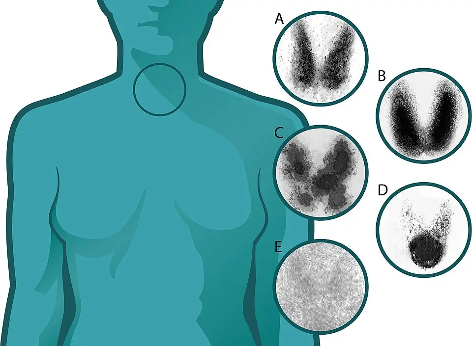

DX.4 — Hyperthyroïdie (thyrotoxicose)
1. Définition
La thyrotoxicose correspond à un excès d'hormones thyroïdiennes dans le sang (Haute Autorité de santé, HAS, 2022) S4. L'hyperthyroïdie correspond à leur hyperproduction par la thyroïde, par activation pathologique du récepteur de la TSH. Toute hyperthyroïdie peut causer une thyrotoxicose, mais une thyroïdite ou un apport excessif d'hormones cause une thyrotoxicose sans hyperthyroïdie S4.
2. Épidémiologie (Suisse, puis Europe)
En Suisse, le sel iodé est passé de 7,5 à 15 milligrammes d'iode par kilogramme de sel en 1980 S10. Dans une région de 109 000 habitants, l'incidence de l'hyperthyroïdie est ensuite tombée à 44 % de son niveau initial en 1988/89 S10. Le sel contient aujourd'hui 25 milligrammes d'iode par kilogramme (Office fédéral de la sécurité alimentaire et des affaires vétérinaires, OSAV) S12. En Europe, une méta-analyse de 2014 montre une prévalence de 0,75 % et une incidence de 51 pour 100 000 personnes par an S9.
Dans la cohorte de Barcelone, la thyrotoxicose (64 cas) et la thyroïdite subaiguë (11 cas) expliquaient 75 pertes de poids involontaires (PPI) sur 2677, soit 2,8 % (calcul dérivé) S1. La thyrotoxicose était la première cause endocrinienne de PPI ; les causes endocriniennes dominaient avant 65 ans (8 %) plutôt qu'après (2 %) S1. Cette répartition par âge comprend aussi le diabète et l'hyperparathyroïdie.
| Population | Donnée | Source |
|---|---|---|
| Région de Soleure, 109 000 habitants, 1980–1989 | L'incidence a monté de 27 % la première année du nouveau sel. Elle a ensuite baissé à 44 % du niveau témoin : le GMNT a reculé de 73 %, la maladie de Basedow de 33 %. | [S10] |
| Berne, 1976–1991, patients adressés | Les formes non immunogènes représentaient 59 % des hyperthyroïdies, les formes immunogènes 41 % ; les adénomes toxiques sont passés de 41 % à 17 %. L'âge rapporté était de 54 ans (forme immunogène) et de 65 ans (forme non immunogène). | [S11] |
| Europe, 17 études (1975–2012) | La prévalence atteint 0,75 % ; l'incidence atteint 51/100 000 par an. | [S9] |
| Population générale (ETA 2018) | La prévalence atteint 1,2–1,6 % : 0,5–0,6 % de formes avérées et 0,7–1,0 % de formes infracliniques. La maladie de Basedow touche 20–30 personnes sur 100 000 par an. | [S2] |
| Cohorte française SU.VI.MAX, femmes de 35 à 60 ans | L'incidence annuelle atteint 0,46 pour 1000 ; la maladie de Basedow cause 70 % des hyperthyroïdies. | [S4] |
| Enfants et adolescents (Europe) | L'incidence atteint 4,58/100 000 par an, et 1 à 2,91/100 000 avant 15 ans ; les filles sont 3,4 fois plus touchées. | [S15] |
La maladie de Basedow, maladie auto-immune, reste la première cause en zone riche en iode (ETA, 2018) S2. L'histoire naturelle dépend de la cause : la maladie de Basedow touche surtout la femme jeune, les nodules toxiques la personne plus âgée, vers 65 ans à Berne S4S6S11. Non traitée, l'hyperthyroïdie cause perte de poids, ostéoporose, fractures, fibrillation atriale (FA) et embolies S2. La crise thyrotoxique représente 10–16 % des hospitalisations pour thyrotoxicose sévère S3.
3. Physiopathologie
Amorce : dans la maladie de Basedow, des anticorps stimulants activent le récepteur de la TSH ; la glande grossit et produit des hormones sans contrôle. Développement : les hormones thyroïdiennes augmentent la thermogenèse et le métabolisme de base, et abaissent les résistances vasculaires S2. Installation : le patient maigrit malgré un appétit conservé ou accru, avec transit accéléré, tachycardie et tremblement S4. Maintien : l'auto-immunité persiste, les nodules autonomes ne régressent pas, et un facteur déclenchant peut précipiter une crise S2S3S4. Trois mécanismes séparent les causes : hyperproduction, libération d'hormones préformées et apport exogène S4.
Le rétrocontrôle explique la sensibilité de la TSH : une petite hausse de la T4L abaisse beaucoup la TSH, selon une relation log-linéaire inverse S2.
4. Démarche diagnostique
Le critère d'ordre est la gravité, puis la fréquence : le médecin exclut d'abord ce qui tue en heures, puis il trie les causes de thyrotoxicose. Cinq situations graves passent en tête (🚩 1 à 5 ; rangs propres à ce tableau, distincts des rangs E du SSP) ; quatre diagnostics différentiels discriminants suivent S2.
| Rang | Hypothèse | Signe ou examen qui tranche | Piège classique | Conduite immédiate si positif |
|---|---|---|---|---|
| 🚩 1 | Crise thyrotoxique | Fièvre souvent supérieure à 38,5 °C, tachycardie disproportionnée, FA, insuffisance cardiaque, confusion, troubles digestifs ; score de Burch–Wartofsky ≥ 45 [S3] | Aucun dosage ne la sépare d'une thyrotoxicose sévère ; le sujet âgé la présente parfois sans signes adrénergiques [S3] | Le médecin transfère en soins intermédiaires ou intensifs et traite sans attendre les dosages (point 11) [S3]. |
| 🚩 2 | FA rapide, insuffisance cardiaque ou syndrome coronarien d'origine thyréotoxique | Pouls irrégulier ; ECG ; signes d'insuffisance cardiaque [S2][S3] | Le bêtabloquant peut faire chuter une cardiomyopathie thyréotoxique ; l'échocardiographie guide le traitement [S3] | Il évalue l'anticoagulation par le score CHA2DS2-VASc (risque embolique de la FA) et le risque hémorragique ; beaucoup de patients retrouvent le rythme sinusal en euthyroïdie [S3]. |
| 🚩 3 | Agranulocytose sous antithyroïdien | Numération-formule sanguine (NFS) urgente devant une fièvre ou une angine [S4] | Une leucopénie existe déjà chez environ 10 % des hyperthyroïdiens avant tout traitement S20 | |
| 🚩 4 | Orbitopathie menaçant la vision | Baisse d'acuité visuelle, vision des couleurs altérée, inocclusion palpébrale, exophtalmie irréductible [S4] | La neuropathie optique existe sans exophtalmie importante [S4] | Le médecin adresse en ophtalmologie en urgence ; l'atteinte menaçante se traite par méthylprednisolone intraveineuse à forte dose, puis décompression si échec [S4][S14]. |
| 🚩 5 | Insuffisance surrénalienne primaire associée | Hyponatrémie inexpliquée (85 % des patients au diagnostic ; l'hyperkaliémie manque chez plus de la moitié) ; cortisol et corticotrophine (ACTH) appariés [S17] | Une TSH élevée sans hypothyroïdie existe chez 52 % des patients au diagnostic ; la lévothyroxine seule peut alors déclencher une crise surrénalienne [S17] | Le médecin dose cortisol et ACTH avant toute lévothyroxine (substitution après iode radioactif, thyroïdectomie ou schéma bloquer-remplacer) [S17][S6]. |
Ensuite, le diagnostic de cause trie quatre groupes : maladie de Basedow, nodules toxiques, thyroïdite ou iatrogénie, et fausse thyrotoxicose S4. Une perte de poids qui persiste malgré l'euthyroïdie relance la recherche d'une autre cause : cancer, diabète, maladie cœliaque, dépression S1.
5. Anamnèse ciblée et drapeaux rouges
Le médecin demande si l'appétit est conservé, car une perte de poids avec appétit accru oriente vers un hypermétabolisme. Il recherche les questions clés : symptômes adrénergiques, douleur cervicale, médicaments iodés ou thyroïdiens, grossesse, tabac, signes oculaires S4. Chaque drapeau rouge impose une action immédiate.
6. Examen physique ciblé, région par région
Il examine d'abord les constantes et le poids, puis la peau, le système neuromusculaire, les yeux et la thyroïde S4. Il termine par le cœur et les poumons, puis la conscience et l'abdomen S3. La HAS rappelle que la plupart des symptômes isolés ne prédisent pas une dysthyroïdie. Un tableau typique de maladie de Basedow suffit pourtant au diagnostic de cause, sans TRAb ni scintigraphie S4.
7. Approche syndromique
Sept syndromes structurent l'examen : 7.1 thyrotoxicose, 7.2 maladie de Basedow, 7.3 nodules toxiques, 7.4 thyroïdite subaiguë, 7.5 cardiothyréose, 7.6 crise thyrotoxique, 7.7 forme apathique du sujet âgé S2S3S4. Chaque signe porte sa définition, son geste et son mécanisme.
8. Diagnostic positif et critères
Selon la HAS (2022), une TSH basse avec une T4L élevée, chez un patient qui a plusieurs symptômes évocateurs, pose le diagnostic d'hyperthyroïdie avérée S4. Une TSH basse persistante avec T4L et T3L normales pose une hyperthyroïdie infraclinique ; la persistance se vérifie à 6 semaines au moins S4. La cause se prouve ensuite : TRAb positifs, glande hypervascularisée et orbitopathie signent la maladie de Basedow (ETA, 2018) S2. La crise thyrotoxique reste un diagnostic clinique, aidé par le score de Burch–Wartofsky S3.
9. Examens complémentaires
9.a Gold standard
Aucun examen unique ne sert d'étalon pour toute thyrotoxicose : la TSH a la meilleure sensibilité et la meilleure spécificité de tous les tests sanguins isolés, et la T4L confirme S2. Pour la cause, la scintigraphie thyroïdienne reste l'examen étiologique de référence S4. Pour la crise thyrotoxique, l'étalon est clinique ; aucun dosage ne la définit S3.
9.b Première intention
Le médecin prescrit la TSH seule et précise le contexte : diagnostic, contrôle ou suivi S4. Si la TSH est basse, le laboratoire ajoute la T4L, puis la T3L, sur le même tube (test réflexe) S5S4. Devant un tableau sévère, il dose d'emblée TSH et T4L S4. La thyrotoxicose confirmée, il dose les TRAb, puis prescrit NFS et tests hépatiques avant tout ATS S4.
9.c Alternatives
Grossesse et allaitement : l'échographie reste le seul examen d'imagerie réalisable, car la scintigraphie y est contre-indiquée S4S26. Les autres situations particulières modifient surtout l'iode et la radioprotection.
9.d Deuxième intention
Si les TRAb sont négatifs, le médecin demande scintigraphie et échographie. Avant iode radioactif ou chirurgie, l'échographie mesure le volume et écarte un nodule suspect ; la scintigraphie évalue la captation S4. En crise, ECG, échocardiographie, radiographie thoracique, test de grossesse, glycémie et potassium complètent le bilan S3.
10. Arbre décisionnel
L'arbre commence par la crise, puis trie la cause ; chaque nœud renvoie à un signe ou un examen S3S4.
- Une thyrotoxicose avec fièvre, confusion, insuffisance cardiaque, FA rapide ou troubles digestifs impose le calcul du score de Burch–Wartofsky S3.
- Si score ≥ 45 ou défaillance d'organe → crise thyrotoxique, soins intensifs, traitement immédiat S3.
- Une fièvre ou une angine sous ATS impose l'arrêt de l'ATS et une NFS en urgence ; des neutrophiles inférieurs à 800/mm³ imposent l'arrêt définitif de tous les ATS S4.
- Si baisse visuelle ou vision des couleurs altérée → ophtalmologie en urgence S4.
- Si perte de poids avec symptômes évocateurs → TSH ; si normale → recherche thyroïdienne close, bilan de la perte de poids poursuivi S4S5.
- Si TSH élevée chez un patient amaigri et hyponatrémique → cortisol et ACTH avant toute lévothyroxine S17.
- Une TSH inférieure à 0,1 mUI/L impose la T4L, puis la T3L si la T4L est normale S4. Une TSH de 0,1 à 0,4 mUI/L impose une nouvelle TSH à 6 semaines S4.
- Une thyrotoxicose confirmée impose un bêtabloquant si le patient a des symptômes, une NFS, des tests hépatiques et le dosage des TRAb S4.
- Des TRAb positifs signent une maladie de Basedow : le médecin propose un ATS de 12 à 18 mois, le sevrage tabagique et une décision partagée S4.
- Des TRAb négatifs imposent scintigraphie et échographie ; une hyperfixation nodulaire signe un GMNT ou un AT, que l'iode radioactif traite en première intention S4.
- Une glande douloureuse avec TSH basse évoque une thyroïdite : le médecin prescrit AINS ou prednisone et un bêtabloquant, sans ATS S4S6.
- Sous amiodarone, il dose TSH, T4L et T3L et sollicite l'endocrinologue. Il traite le type 1 par thionamides (en Suisse, seul Propycil® couvre l'hyperthyroïdie iodée dans son AIPS) et le type 2 par glucocorticoïdes S4S13S19S20.
- Si TSH basse isolée avec maladie aiguë, jeûne, corticoïdes ou premier trimestre → contrôle, pas de traitement S4.
- Si la perte de poids persiste en euthyroïdie → autre cause : cancer, diabète, maladie cœliaque, dépression S1.
11. Prise en charge selon les recommandations suisses
La SSED approuve seulement la stratégie de dosage S5. Le texte suit l'ETA (2018), la HAS (2022), le consensus européen de 2026 sur la crise thyrotoxique et les AIPS suisses S2S4S3.
11.A But
Le traitement vise d'abord à contrôler les symptômes et à rendre l'euthyroïdie : la T4L se normalise souvent en 3 à 4 semaines, et en 6 semaines chez l'enfant S2S15. Il vise ensuite la rémission de la maladie de Basedow après 12 à 18 mois d'ATS, ou la guérison définitive par iode radioactif ou chirurgie S2S4. Dans la crise thyrotoxique, il vise une amélioration en 24 à 72 heures S3. À long terme, il prévient FA, ostéoporose et dénutrition, et le patient reprend du poids S4S15.
11.B Moyens
Forme compliquée : la crise thyrotoxique se traite en soins intermédiaires ou intensifs, sans attendre les dosages S3. La conduite chronologique comprend mesures générales, bêtabloquant, ATS à forte dose, glucocorticoïde, puis iodure une heure après l'ATS S3.
Les autres formes compliquées comprennent FA ou insuffisance cardiaque thyréotoxique, agranulocytose, hépatite au propylthiouracile, orbitopathie menaçant la vision, thyrotoxicose à l'amiodarone S2S3S4S13S14S20.
Forme non compliquée : le médecin commence par un bêtabloquant si le patient a des symptômes, et par un ATS si la thyrotoxicose est avérée par hyperproduction S4. Le bêtabloquant agit en heures, alors que l'ATS rend l'euthyroïdie en semaines S2S4. Ensuite, il suit l'ordre des étapes propre à chaque cause, en décision partagée.
La pharmacologie des antithyroïdiens, des bêtabloquants et des autres médicaments suit l'AIPS suisse ; chaque usage hors information professionnelle est signalé.
Moyens non médicamenteux : thyroïdectomie totale par un chirurgien expérimenté, iode radioactif avec radioprotection, thermoablation d'un petit adénome, sevrage tabagique, nutrition S4S2. Les situations spéciales (grossesse, allaitement, enfant, sujet âgé, insuffisances) changent le choix des molécules.
11.C Surveillance
Le médecin dose la T4L, et la T3L si elle était anormale, 3 à 6 semaines après le début de l'ATS, puis toutes les 3 à 6 semaines jusqu'à normalisation S4. Ensuite, il dose la TSH tous les 2 à 4 mois S4. Il surveille aussi sang, foie, poids et cœur, avec des seuils d'arrêt.
11.D Pronostic, critères de sortie et recherche
La maladie de Basedow entre en rémission prolongée chez 30–40 % des patients ; la récidive impose de discuter un traitement définitif S6S2. La crise thyrotoxique tue 8 % à plus de 30 % des patients selon les séries S3. Le patient sort après une crise selon des critères listés un par un.
12. Prévention
Prévention primaire : le sel iodé (25 milligrammes d'iode par kilogramme) fournit 51 % de l'iode alimentaire en Suisse, et sa généralisation a réduit les nodules toxiques S12S10. L'OSAV demande que les compléments des femmes enceintes ou allaitantes contiennent de l'iode S12. Prévention secondaire : la SSCC et la SSED rejettent le dépistage systématique, mais ciblent la TSH sur les symptômes et les situations à risque S5S4. Prévention tertiaire : le médecin prévient la crise, l'agranulocytose grave et l'aggravation de l'orbitopathie par des gestes précis S3S4S14.
13. Points clés
- Une perte de poids avec appétit conservé impose une TSH, puis la T4L et la T3L en cascade si la TSH est basse.
- Toute thyrotoxicose avec fièvre, confusion, FA rapide ou insuffisance cardiaque est une crise thyrotoxique, traitée en soins intensifs sans attendre les dosages.
- Dans la crise, l'iodure se donne au moins une heure après l'antithyroïdien, jamais avant.
- Une fièvre ou une angine sous antithyroïdien impose l'arrêt du médicament et une numération-formule sanguine en urgence.
- Au premier trimestre de grossesse, le propylthiouracile remplace le carbimazole ; l'iode radioactif est contre-indiqué pendant la grossesse et l'allaitement.
- Une TSH élevée chez un patient amaigri et hyponatrémique impose cortisol et ACTH avant toute lévothyroxine.
14. Pièges et questions fréquentes à l'examen fédéral suisse
- Un patient dénutri hospitalisé a une TSH à 0,2 mUI/L et une T4L normale : faut-il prescrire un antithyroïdien S4S6? Non. La maladie aiguë et la dénutrition abaissent la TSH ; le médecin recontrôle à 6 semaines au moins S4S6.
- La TSH est indétectable et la T4L normale chez un patient qui maigrit et tremble : l'hyperthyroïdie est-elle exclue ? Non. Il dose la T3L pour chercher une hyperthyroïdie à T3 S4S2.
- Que faire pour une femme enceinte de 8 semaines qui prend du carbimazole S19S20? Passer au propylthiouracile au premier trimestre, puis revenir au carbimazole après l'organogenèse ; le schéma bloquer-remplacer et l'iode radioactif sont contre-indiqués S19S20S25.
- Sous quel seuil de neutrophiles la HAS contre-indique-t-elle définitivement tous les ATS ? Sous 800/mm³ ; la HAS contre-indique alors tous les ATS, propylthiouracile compris, et les AIPS signalent une allergie croisée S4S19S20.
- Un asthmatique thyrotoxique peut-il recevoir de l'Inderal® ? Non : l'AIPS contre-indique l'asthme ; le consensus propose le diltiazem, hors information professionnelle S21S3S30.
- Un patient sous amiodarone devient thyrotoxique : quels dosages ? TSH, T4L et T3L d'emblée ; le type 1 reçoit des thionamides, le type 2 des glucocorticoïdes oraux S4S13. Piège : l'AIPS de Néo-Mercazole® exclut l'hyperthyroïdie induite par l'iode, celle de Propycil® la couvre S19S20.
- Une orbitopathie active contre-indique-t-elle l'iode radioactif ? Oui selon l'ETA et la HAS ; les ATS ou la chirurgie passent avant S2S4.
- Après de l'iodure donné dans une crise, quand prévoir l'iode radioactif ? Le délai est d'au moins 2 à 3 mois S3.
- Après 4 semaines de carbimazole, la T4L est normale mais la TSH reste indétectable : faut-il augmenter la dose S2S4? Non. La TSH reste freinée des mois ; la T4L guide la dose S2S4.
Sources (toutes consultées le 30.10.2026)
Les doses viennent de l'information professionnelle suisse (AIPS, fichier Swissmedic/Refdata du 08.10.2026) ; les autres doses sont attribuées à leur source et signalées hors information professionnelle.
- [S1] Bosch X, et al. Unintentional weight loss: clinical characteristics and outcomes in a prospective cohort of 2677 patients. PLoS One 2017;12(4):e0175125 (Hospital Clínic, Barcelone). https://www.ebi.ac.uk/europepmc/webservices/rest/PMC5384681/fullTextXML.
- [S2] Kahaly GJ, Bartalena L, Hegedüs L, et al. 2018 European Thyroid Association Guideline for the Management of Graves' Hyperthyroidism. Eur Thyroid J 2018;7(4):167–186 (ETA) ; extraits du texte intégral et résumé. https://pmc.ncbi.nlm.nih.gov/articles/PMC6140607/ ; https://europepmc.org/article/MED/30283735.
- [S3] Taylor P, Okosieme O, Effraimidis G, et al. Management of thyroid emergencies: joint consensus statement on management of thyroid storm (ETA, British Thyroid Association, Society for Endocrinology, Welsh Endocrine and Diabetes Society ; coauteur du CHUV). Eur Thyroid J 2026;15(4):ETJ260043. https://www.ebi.ac.uk/europepmc/webservices/rest/PMC13506520/fullTextXML.
- [S4] Haute Autorité de santé (HAS). Prise en charge des hyperthyroïdies en population générale. Recommandation validée le 15.12.2022 (mise en ligne mars 2023). https://www.has-sante.fr/upload/docs/application/pdf/2023-03/recommandation_prise_en_charge_des_hyperthyroidies_chez_ladulte_mel.pdf.
- [S5] Société suisse de chimie clinique (SSCC), groupe de travail post-analytique, approuvé par la Société suisse d'endocrinologie et de diabétologie (SSED). Analyses de laboratoire du bilan thyroïdien initial : introduction du test réflexe. Version d'octobre 2025. https://www.sgedssed.ch/SgedSsed/fileadmin/7_Endokrinologie/72_Empfehlungen_SGED/recommandations_postanalytique_bilan_thyroidien_20251010.pdf.
- [S6] Wuerzner K, Pasche O, Rodondi N, Portmann L. Les dysthyroïdies en médecine de premier recours. Rev Med Suisse 2010;6(273):2306–2311 (CHUV, Lausanne). https://www.revmed.ch/revue-medicale-suisse/2010/revue-medicale-suisse-273/les-dysthyroidies-en-medecine-de-premier-recours.
- [S7] Biondi B, Bartalena L, Cooper DS, et al. The 2015 European Thyroid Association Guidelines on Diagnosis and Treatment of Endogenous Subclinical Hyperthyroidism. Eur Thyroid J 2015;4(3):149–163 (résumé). https://europepmc.org/article/MED/26558232.
- [S8] Collet TH, et al., Thyroid Studies Collaboration (Lausanne ; Berne, Rodondi N). Subclinical hyperthyroidism and the risk of coronary heart disease and mortality. Arch Intern Med 2012;172(10):799–809 (texte intégral, manuscrit auteur PMC3872478). https://pmc.ncbi.nlm.nih.gov/articles/PMC3872478/.
- [S9] Garmendia Madariaga A, Santos Palacios S, Guillén-Grima F, Galofré JC. The incidence and prevalence of thyroid dysfunction in Europe: a meta-analysis. J Clin Endocrinol Metab 2014;99(3):923–931 (résumé). https://europepmc.org/article/MED/24423323.
- [S10] Baltisberger BL, Minder CE, Bürgi H. Decrease of incidence of toxic nodular goitre in a region of Switzerland after full correction of mild iodine deficiency. Eur J Endocrinol 1995;132:546–549 (Bürgerspital, Soleure ; résumé). https://europepmc.org/article/MED/7749493.
- [S11] Als C, Listewnik M, Rösler H, Bartkowiak E. Immunogenic and non-immunogenic hyperthyroidism. Recent trends in prealpine Switzerland and in coastal Poland. Nuklearmedizin 1995;34:92–99 (Inselspital, Berne ; résumé). https://europepmc.org/article/MED/7630748.
- [S12] Office fédéral de la sécurité alimentaire et des affaires vétérinaires (OSAV). Sel iodé ; monitorage du statut en iode 2020–2022. https://www.blv.admin.ch/fr/sel-iode.
- [S13] Bartalena L, Bogazzi F, Chiovato L, et al. 2018 European Thyroid Association (ETA) Guidelines for the Management of Amiodarone-Associated Thyroid Dysfunction. Eur Thyroid J 2018;7:55–66 (résumé). https://europepmc.org/article/MED/29594056.
- [S14] Bartalena L, Kahaly GJ, Baldeschi L, et al. The 2021 European Group on Graves' orbitopathy (EUGOGO) clinical practice guidelines for the medical management of Graves' orbitopathy. Eur J Endocrinol 2021;185(4):G43–G67 (résumé). https://europepmc.org/article/MED/34297684.
- [S15] Mooij CF, Cheetham TD, Verburg FA, et al. 2022 European Thyroid Association Guideline for the management of pediatric Graves' disease. Eur Thyroid J 2022;11(1):e210073. https://www.ebi.ac.uk/europepmc/webservices/rest/PMC9142815/fullTextXML.
- [S16] Campi I, Feldt-Rasmussen U, Gruson D, et al., Moran C. 2026 ETA guideline on interference in immunoassay measurements used in assessment of thyroid function. Eur Thyroid J 2026;15(4):ETJ260011. https://www.ebi.ac.uk/europepmc/webservices/rest/PMC13482799/fullTextXML.
- [S17] Øksnes M, Husebye ES. Approach to the patient: diagnosis of primary adrenal insufficiency in adults. J Clin Endocrinol Metab 2024;109(1):269–278. https://www.ebi.ac.uk/europepmc/webservices/rest/PMC10735307/fullTextXML.
- [S19] AIPS Swissmedic. Néo-Mercazole® (carbimazole), comprimés 5 mg, n° 21037, Advanz Pharma ; mise à jour août 2020. https://files.refdata.ch/simis-public-prod/MedicinalDocuments/b04dc560aedd42f08916362feb552d4a-fr.html.
- [S20] AIPS Swissmedic. Propycil® 50 (propylthiouracile), comprimés 50 mg, n° 56300, Curatis ; mise à jour septembre 2024. https://files.refdata.ch/simis-public-prod/MedicinalDocuments/85ff0f142d524982871accea108d0075-fr.html.
- [S21] AIPS Swissmedic. Inderal® (propranolol), n° 31706, Atnahs Pharma ; mise à jour janvier 2023. https://files.refdata.ch/simis-public-prod/MedicinalDocuments/d2367123254b421e85f5b723862604f9-fr.html.
- [S22] AIPS Swissmedic. Brevibloc® (esmolol), n° 49576, Baxter ; mise à jour septembre 2013. https://files.refdata.ch/simis-public-prod/MedicinalDocuments/573650c676e34db48c32b2772967afcf-fr.html.
- [S23] AIPS Swissmedic. Solu-CORTEF® (hydrocortisone), n° 23533, Pfizer ; mise à jour octobre 2025. https://files.refdata.ch/simis-public-prod/MedicinalDocuments/521df69c10204956ac5a90a438143ee8-fr.html.
- [S24] AIPS Swissmedic. Prednisone Streuli® (prednisone), n° 29349, Streuli Pharma ; mise à jour juin 2026. https://files.refdata.ch/simis-public-prod/MedicinalDocuments/20fd4e0534634d9a939cba4c8509130b-fr.html.
- [S25] AIPS Swissmedic. Sodium iodide (I-131) capsule T Curium, n° 52728, b.e.imaging ; mise à jour juillet 2022. https://files.refdata.ch/simis-public-prod/MedicinalDocuments/f8fad554621b4a84aaf3fb479fb26710-fr.html.
- [S26] AIPS Swissmedic. Ultra-TechneKow FM®, générateur de technétium (99mTc), n° 49358, b.e.imaging ; mise à jour mai 2018. https://files.refdata.ch/simis-public-prod/MedicinalDocuments/d139bb761d584d92a70a3c9ad5419515-fr.html.
- [S27] AIPS Swissmedic. Iodure de potassium 65 SERB, n° 57068, DRAC ; mise à jour septembre 2013. https://files.refdata.ch/simis-public-prod/MedicinalDocuments/d233f79ab96e43238e966c2078deead4-fr.html.
- [S28] AIPS Swissmedic. Quantalan® (colestyramine), n° 50711, Cheplapharm ; mise à jour décembre 2021. https://files.refdata.ch/simis-public-prod/MedicinalDocuments/240e5289adb94787ba7b65646968918c-fr.html.
- [S29] AIPS Swissmedic. Cordarone®, comprimés (amiodarone), n° 33393, Sanofi-Aventis (Suisse) ; mise à jour avril 2024. https://files.refdata.ch/simis-public-prod/MedicinalDocuments/5def4307d9ea4f2999e1fa2394bb6643-fr.html.
- [S30] AIPS Swissmedic. Dilzem® (diltiazem), n° 46269, Pfizer ; mise à jour janvier 2024. https://files.refdata.ch/simis-public-prod/MedicinalDocuments/59e6c62b89524a20a42f6ecc1976d248-fr.html.
- [S31] AIPS Swissmedic. selenase® pro injectione/peroral (sélénium), n° 53770, Plavidente ; mise à jour juin 2023. https://files.refdata.ch/simis-public-prod/MedicinalDocuments/6cd2fff2e1644139adc5b7167634e126-fr.html.
- [S32] Office fédéral de la santé publique (OFSP). Liste des spécialités, interface publique : Neo Mercazole, Propycil, Inderal. https://epl.bag.admin.ch/api/sl/public/medicinal-products?page=1&size=50&search=Mercazole (idem avec search=Propycil et search=Inderal).
- [S33] Swissmedic. Conditionnements autorisés à usage humain, état au 30.09.2026 (recherche : thiamazole, perchlorate, Lugol : 0 occurrence ; carbimazole et propylthiouracile présents). https://www.swissmedic.ch/dam/swissmedic/de/dokumente/internetlisten/zugelassene_packungen_human.xlsx.download.xlsx/zugelassene_packungen_ham.xlsx.
- [S34] National Institute for Health and Care Excellence (NICE). Suspected cancer: recognition and referral, NG12, recommandation 1.13.2 révisée le 15.04.2026. https://www.nice.org.uk/guidance/ng12/chapter/Recommended-actions-organised-by-symptom-and-findings-of-primary-care-investigations.
- [S35] AIPS Swissmedic. Iodure de potassium axapharm, n° 67017, axapharm ag ; mise à jour septembre 2013. https://files.refdata.ch/simis-public-prod/MedicinalDocuments/9ebb35a94e724a578fae5390577de9c9-fr.html.
- [S36] AIPS Swissmedic. Solu-MEDROL® (méthylprednisolone), n° 35112, Pfizer ; mise à jour août 2025. https://files.refdata.ch/simis-public-prod/MedicinalDocuments/24c65936933542e2807ebdd8b2524e62-fr.html.
- [S37] Bednarczuk T, Brix TH, Schima W, Zettinig G, Kahaly GJ. 2021 European Thyroid Association Guidelines for the Management of Iodine-Based Contrast Media-Induced Thyroid Dysfunction. Eur Thyroid J 2021;10(4):269–284 (résumé). https://europepmc.org/article/MED/34395299.
- [S38] Ordonnance réglant l'admission des personnes et des véhicules à la circulation routière (OAC), RS 741.51, annexe 1, ch. 7 et 8, état le 1er janvier 2026. https://fedlex.data.admin.ch/filestore/fedlex.data.admin.ch/eli/cc/1976/2423_2423_2423/20260101/fr/html/fedlex-data-admin-ch-eli-cc-1976-2423_2423_2423-20260101-fr-html-3.html.
Contenu établi à partir des sources citées ; non validé cliniquement par un médecin.
Formes biologiques et grades
| Forme | TSH | T4L | T3L | Ce qu'elle implique |
|---|---|---|---|---|
| Avérée | Basse, souvent indétectable | Élevée | Souvent élevée | Elle impose un traitement étiologique et, au besoin, symptomatique [S4]. |
| À T3 | Basse, souvent indétectable | Normale | Élevée | Elle traduit parfois une maladie de Basedow ou des nodules autonomes [S4]. |
| Infraclinique de grade 1 | 0,1–0,39 mUI/L | Normale | Normale | L'ETA envisage un traitement après 65 ans à cause du risque de fibrillation atriale [S7]. |
| Infraclinique de grade 2 | < 0,1 mUI/L | Normale | Normale | L'ETA recommande un traitement après 65 ans [S7]. |
La HAS note qu'une forme infraclinique à TSH indétectable évolue plus souvent vers une forme avérée qu'une forme à TSH entre 0,1 et 0,4 mUI/L S4. Les intervalles de référence varient selon la trousse du laboratoire S4S5. Le Centre hospitalier universitaire vaudois (CHUV) publiait en 2010 une TSH de référence de 0,2–3,5 mU/L et une T4L de 8–22 pmol/L S6.
Trois mécanismes, trois familles de causes
| Mécanisme | Causes | Conséquence pratique |
|---|---|---|
| Hyperproduction (hyperthyroïdie vraie) | Maladie de Basedow (70 % des hyperthyroïdies selon la HAS) ; goitre multinodulaire toxique (GMNT) ; adénome toxique (AT) ; hyperthyroïdie induite par l'iode ou l'amiodarone de type 1 ; adénome thyréotrope [S4][S13] | Les antithyroïdiens de synthèse (ATS) agissent ; l'iode radioactif agit [S4]. |
| Libération d'hormones préformées | Thyroïdite subaiguë de De Quervain ; thyroïdite indolore ; thyrotoxicose à l'amiodarone de type 2 [S4][S13][S3] | Les ATS et l'iode n'agissent pas ; le bêtabloquant soulage [S3][S4][S6]. |
| Apport exogène | Thyrotoxicose factice : prise excessive d'hormones thyroïdiennes [S4] | La thyroglobuline sérique basse ou indétectable signe l'apport externe, en l'absence d'anticorps anti-thyroglobuline [S4]. |
Évolution chez l'individu
La HAS indique un pic de l'hyperthyroïdie entre 40 et 60 ans, avec une nette prédominance féminine S4. Une revue suisse de 2010 indique que la maladie de Basedow touche surtout la femme de 20 à 40 ans ; le tabac augmente la prévalence de l'hyperthyroïdie S6. Environ 3 % des femmes et 0,5 % des hommes développent une maladie de Basedow au cours de leur vie S2.
La maladie de Basedow entre en rémission prolongée chez 30–40 % des patients ; un suivi prolongé reste nécessaire, car la récidive, l'hypothyroïdie et l'orbitopathie surviennent S6. Chez l'enfant, la rémission atteint 20–30 % après 2 ans d'ATS ; elle augmente avec la durée du traitement S15. Une hyperthyroïdie infraclinique peut rester stable, devenir avérée ou se normaliser ; celle d'un GMNT ou d'un AT se normalise rarement S4.
Le sujet âgé présente plus souvent une FA, une insuffisance cardiaque ou un syndrome coronarien aigu ; il présente parfois une forme apathique S2. Une analyse de 52 674 participants, dirigée depuis Lausanne et Berne, a trouvé 4,2 % d'hyperthyroïdies infracliniques S8. Celles-ci augmentaient la mortalité totale (rapport de risque, HR, 1,24) et la FA (HR 1,68) S8. La mortalité coronarienne et la FA culminaient sous 0,10 mUI/L de TSH S8.
Enjeux de santé publique
Gravité : la mortalité de la crise thyrotoxique varie de 8 % à plus de 30 % selon les séries S3. Sur 92 crises admises en soins intensifs en France, 17 % des patients sont morts en réanimation et 22 % à 6 mois S3. Le choc cardiogénique des 48 premières heures prédisait la mort en réanimation (odds ratio 9,43) S3. La précarité et l'absence d'assurance augmentent les hospitalisations pour thyrotoxicose S3.
Iode : la carence iodée favorise les nodules autonomes ; sa correction en Suisse a réduit les GMNT S10S11. Le monitorage 2020–2022 de l'OSAV juge les écoliers suffisamment approvisionnés, mais le statut iodé des femmes enceintes est insuffisant et s'est dégradé depuis 2014 S12.
Dépistage : la Société suisse de chimie clinique (SSCC) ne recommande pas le dépistage systématique chez l'asymptomatique ; la Société suisse d'endocrinologie et de diabétologie (SSED) approuve ce texte. Le dosage cible la grossesse, l'infertilité, les troubles du rythme et les nouveau-nés. Le test réflexe (TSH seule, puis hormones si TSH anormale) limite les dosages inutiles S5.
De la cause au signe, étape par étape
Maladie de Basedow. Des lymphocytes T dirigés contre la thyroïde infiltrent les tissus porteurs du récepteur de la TSH. Les anticorps stimulants (TRAb, anticorps anti-récepteur de la TSH) imitent la TSH ; ils entraînent hyperplasie et production non régulée S2. L'orbitopathie est la principale manifestation extrathyroïdienne ; le tabac, la dysthyroïdie, des TRAb élevés, l'iode radioactif et l'hypercholestérolémie la favorisent S14.
Nodules autonomes. Un ou plusieurs nodules s'autonomisent ; la TSH baisse et le parenchyme sain s'éteint à la scintigraphie S4. À Berne, la fréquence des adénomes toxiques a baissé quand la carence iodée a reculé S11.
Iode. Un apport d'iode brutal révèle une autonomie latente : l'incidence a monté de 27 % la première année du sel plus iodé S10. L'amiodarone apporte de l'iode (type 1) ou détruit une thyroïde normale (type 2) S13. Un produit de contraste iodé peut précipiter une crise chez un porteur de goitre multinodulaire S6S3.
Thyroïdites. La glande inflammatoire libère ses hormones stockées ; aucune synthèse nouvelle ne survient S3S4. La phase toxique s'épuise d'elle-même ; les ATS n'y servent à rien S6.
Perte de poids. La dépense d'énergie dépasse l'apport : l'hypermétabolisme, la diarrhée et la fonte musculaire s'additionnent S2S4. La HAS cite l'augmentation de l'appétit parmi les symptômes habituels, et l'anorexie parmi les symptômes rares (moins de 10 %) S4.
Crise thyrotoxique. Les taux hormonaux ressemblent souvent à ceux d'une thyrotoxicose non compliquée. La réponse tissulaire aux catécholamines augmente, des cytokines inflammatoires s'activent et l'effet de la T3 domine S3. Infection, chirurgie, traumatisme, infarctus, accident vasculaire cérébral, accouchement, acidocétose et produit de contraste iodé déclenchent la crise S3.
Rétrocontrôle hypophysaire et pièges de la TSH
La TSH hypophysaire règle la formation et la libération de T4 et de T3 ; les hormones freinent la TSH par rétrocontrôle négatif S5. Une TSH normale exclut donc le plus souvent une dysthyroïdie. Les exceptions restent rares : dysthyroïdie centrale, résistance aux hormones thyroïdiennes, adénome thyréotrope, glucocorticoïdes ou dopamine S5.
Inertie : la TSH reste souvent freinée plusieurs mois après le retour à l'euthyroïdie ; elle ne mesure pas la réponse précoce au traitement S2. La demi-vie de la T4L dure environ une semaine ; un nouvel équilibre demande environ cinq demi-vies S4.
Exemple : une femme de 34 ans traitée depuis 3 semaines a une T4L normalisée et une TSH encore indétectable S2S4. Le médecin adapte la dose d'après la T4L et non d'après la TSH S2S4.
Quatre diagnostics différentiels vraiment discriminants
| Diagnostic | Ce qui tranche | Piège | Conduite si positif |
|---|---|---|---|
| Maladie de Basedow | TRAb positifs ; orbitopathie ; glande hypoéchogène et hypervascularisée [S2][S4] | Un tableau typique suffit au diagnostic clinique ; les TRAb restent utiles pour la stratégie [S4] | ATS d'emblée, bêtabloquant si symptômes, décision partagée sur le traitement définitif [S4]. |
| GMNT ou adénome toxique | Scintigraphie : hyperfixation d'un ou de plusieurs nodules, extinction du reste [S4] | La forme infraclinique se normalise rarement seule [S4] | Iode radioactif en première intention, sauf contexte chirurgical [S4]. |
| Thyroïdite ou thyrotoxicose iatrogène | Thyroïde douloureuse ; amiodarone, iode, immunothérapie ; thyroglobuline basse si prise d'hormones [S4] | Les ATS n'agissent pas sur une thyrotoxicose par libération [S6] | Bêtabloquant ; AINS ou prednisone pour la De Quervain ; avis spécialisé sous amiodarone [S4][S6]. |
| Fausse thyrotoxicose | TSH basse isolée qui se normalise au contrôle à 6 semaines ; contexte de maladie aiguë, de jeûne, de corticoïdes ou de premier trimestre [S4] | Une interférence (biotine, anticorps) mime une maladie de Basedow, TRAb compris [S16] | Le médecin recontrôle, arrête la biotine si possible et discute d'une autre technique avec le laboratoire [S4][S16]. |
Cette situation est fréquente en G16 : la dénutrition elle-même diminue parfois la TSH, avec des hormones normales S6. Le médecin ne traite pas une TSH basse isolée chez un patient cachectique ; il recontrôle et cherche la cause de l'amaigrissement S4S6. Dès 60 ans, une perte de plus de 5 % en 6 mois restée inexpliquée impose une investigation urgente ou un adressage vers une filière de suspicion de cancer S34. Cette conduite vient de la recommandation NG12 du National Institute for Health and Care Excellence (NICE, avril 2026) S34.
Questions clés et leur raison
| Question | Raison physiopathologique | Ce qu'elle change |
|---|---|---|
| L'appétit a-t-il augmenté malgré la perte ? | L'hypermétabolisme brûle plus qu'il n'entre [S2][S4] | Elle oriente vers la TSH plutôt que vers une anorexie ; l'anorexie reste possible dans moins de 10 % des cas [S4]. |
| Palpitations, essoufflement, tremblement, sueurs, intolérance à la chaleur, diarrhée, insomnie, nervosité ? | L'excès d'hormones accroît thermogenèse et tonus adrénergique [S2][S4] | Plusieurs symptômes réunis justifient le dosage ; un symptôme isolé prédit mal [S4]. |
| Depuis quand ? | La HAS inscrit le délai d'apparition des symptômes dans l'interrogatoire étiologique [S4] | Le médecin relie le début de la perte de poids aux expositions (iode, médicaments, grossesse) [S4]. |
| Douleur au cou, infection oto-rhino-laryngologique (ORL) récente ? | Une inflammation libère les hormones stockées [S4] | Elle évoque une thyroïdite de De Quervain : pas d'ATS [S4][S6]. |
| Amiodarone, lithium, immunothérapie, interféron alpha, antirétroviral, hormones thyroïdiennes, produit de contraste, phytothérapie ou complément iodé ? | Ces produits induisent une thyrotoxicose ou une hyperthyroïdie [S4] | Sous amiodarone, le bilan comprend d'emblée TSH, T4L et T3L ; le patient est adressé à l'endocrinologue [S4]. |
| Biotine en complément ? | La biotine perturbe les dosages streptavidine–biotine [S16] | Elle mime une T4L et une T3L hautes et des TRAb positifs ; le médecin redose après arrêt [S16]. |
| Grossesse, post-partum, projet de grossesse ? | La TSH peut être basse au premier trimestre sans maladie thyroïdienne [S4] | Elle change le choix de l'ATS et contre-indique l'iode radioactif [S4]S25. |
| Antécédents personnels ou familiaux thyroïdiens ou auto-immuns, diabète de type 1 ? | L'auto-immunité se regroupe ; la polyendocrinopathie de type 2 associe insuffisance surrénalienne et dysthyroïdie [S4][S17] | Le médecin pense à l'insuffisance surrénalienne avant de prescrire de la lévothyroxine [S17]. |
| Tabac ? | Le tabac favorise l'apparition et l'aggravation de l'orbitopathie [S4][S14] | Le sevrage est recommandé à tout patient basedowien [S4]. |
| Douleur rétro-orbitaire, diplopie, baisse de vision, couleurs ternes ? | L'inflammation orbitaire comprime le nerf optique [S4] | Elle impose un avis ophtalmologique, en urgence si la vision baisse [S4]. |
| Dysphagie, voix rauque ? | Un goitre volumineux comprime [S4] | Elle oriente vers la chirurgie plutôt que vers l'iode radioactif [S4]. |
| Sujet âgé : fatigue, humeur basse, essoufflement ? | La forme apathique manque de signes adrénergiques [S2] | Le médecin dose la TSH même sans tableau typique [S3]. |
Drapeaux rouges et action imposée
| Drapeau rouge | Ce qu'il impose tout de suite |
|---|---|
| Fièvre, tachycardie disproportionnée, confusion, agitation, vomissements, diarrhée, ictère ou insuffisance cardiaque chez un thyrotoxique | Le médecin suspecte une crise thyrotoxique : soins intermédiaires ou intensifs, traitement immédiat, recherche du facteur déclenchant [S3]. |
| FA rapide, douleur thoracique, œdème pulmonaire | Il fait un ECG, évalue la fonction cardiaque et adapte le bêtabloquant à la fonction ventriculaire [S3]. |
| Fièvre, angine, aphtes, saignements sous ATS | Le patient arrête l'ATS et consulte immédiatement ; le médecin fait une NFS en urgence S19[S4]. |
| Ictère, selles décolorées, urines foncées, prurit, douleur de l'hypochondre droit sous ATS | Il arrête l'ATS et dose les tests hépatiques ; sous propylthiouracile, l'atteinte peut aller jusqu'à l'insuffisance hépatique aiguë S20[S4]. |
| Baisse d'acuité, vision des couleurs altérée, inocclusion palpébrale | Il adresse en ophtalmologie en urgence [S4]. |
| Signes de compression trachéale | Ils contre-indiquent le carbimazole ; un goitre intrathoracique peut obstruer la trachée S19. |
| Faiblesse musculaire brutale sous corticoïdes à forte dose | Il dose le potassium : les glucocorticoïdes peuvent déclencher une paralysie périodique thyrotoxique [S3]. |
| Hyponatrémie inexpliquée, TSH élevée chez un patient amaigri | Il dose cortisol et ACTH avant toute lévothyroxine ; si le patient est instable, il donne hydrocortisone intraveineuse et chlorure de sodium (NaCl) sans délai [S17]. |
| Grossesse avec thyrotoxicose | Il demande un avis spécialisé ; toute atteinte thyroïdienne de la femme enceinte le justifie [S6][S4]. |
Constantes et poids
La tachycardie, la FA, la fièvre et la perte de poids signent l'excès hormonal. Le médecin pèse le patient, calcule l'indice de masse corporelle (IMC), compte le pouls sur une minute et mesure la pression artérielle. Chez le sujet sain, le pouls reste régulier et inférieur à 90/min, la température normale et le poids stable S3S4. Le score de Burch–Wartofsky compte 0 point sous 90/min et 25 points dès 140/min S3.
Système neuromusculaire
Le tremblement des extrémités et la faiblesse musculaire accompagnent la thyrotoxicose. Le patient tend les bras, doigts écartés, et le médecin observe le tremblement ; il teste ensuite le lever de chaise. Chez le sujet sain, aucun tremblement n'apparaît et la force reste normale S4.
Yeux
La rétraction palpébrale et l'éclat du regard viennent de l'excès adrénergique ; l'exophtalmie, l'œdème et la rougeur palpébrale ou conjonctivale et la diplopie traduisent l'orbitopathie. Il observe le regard de face et de profil, teste la motilité oculaire et la vision des couleurs. Un regard calme, sans rétraction ni exophtalmie, et des mouvements libres définissent la normale S4. L'orbitopathie oriente vers la maladie de Basedow S2S4.
Thyroïde
Un goitre diffus avec souffle oriente vers la maladie de Basedow S4, un nodule ou un goitre nodulaire oriente vers une autonomie. Une glande douloureuse avec TSH basse oriente vers une thyroïdite subaiguë. Le médecin évalue le volume, la consistance, les nodules et la sensibilité, puis ausculte la glande à la recherche d'un souffle. Une glande normale est indolore, sans nodule ni souffle S4.
Cœur et poumons
La FA, les œdèmes des pieds, les râles bibasaux et l'œdème pulmonaire signent l'atteinte cardiaque de la thyrotoxicose. Il ausculte le cœur et les bases pulmonaires. Le score de Burch–Wartofsky compte ces signes pour 5 à 15 points S3. Chez le sujet sain, le rythme est régulier, sans œdème ni râles S3.
Conscience et abdomen
L'agitation, le délire, la psychose, la léthargie, les convulsions et le coma, puis la diarrhée, les vomissements et l'ictère, définissent la crise thyrotoxique. Il cote ces signes un à un. Chez le sujet sain, le patient reste orienté et l'abdomen reste souple, sans ictère S3.
7.1 Syndrome de thyrotoxicose
| Signe | Type | Mécanisme |
|---|---|---|
| Perte de poids avec appétit accru | Fonctionnel | La thermogenèse et le métabolisme de base augmentent [S2]. |
| Intolérance à la chaleur, sueurs | Fonctionnel | La production de chaleur augmente [S2]. |
| Palpitations, nervosité, insomnie | Fonctionnel | La stimulation adrénergique augmente [S4]. |
| Diarrhée, transit accéléré | Fonctionnel | Le transit s'accélère [S4]. |
| Tachycardie | Physique | Les effets adrénergiques et la baisse des résistances vasculaires l'entretiennent [S2][S4]. |
| Tremblement des extrémités | Physique | La stimulation adrénergique l'entretient [S4]. |
| Faiblesse musculaire | Physique | Le catabolisme fait fondre le muscle [S2][S4]. |
7.2 Syndrome basedowien
| Signe | Type | Mécanisme |
|---|---|---|
| Goitre diffus avec souffle | Physique | Les TRAb causent l'hyperplasie ; la glande devient hypervascularisée [S2]. |
| Orbitopathie | Physique et fonctionnel | L'inflammation orbitaire auto-immune la cause ; le tabac l'aggrave [S14][S4]. |
| Infiltration prétibiale | Physique | L'auto-immunité basedowienne touche la peau [S4]. |
7.3 Syndrome nodulaire toxique
| Signe | Type | Mécanisme |
|---|---|---|
| Nodule ou goitre nodulaire | Physique | Des nodules s'autonomisent, surtout après 60 ans [S4]. |
| Dysphagie, raucité | Fonctionnel | Un goitre volumineux comprime l'œsophage ou le nerf récurrent [S4]. |
7.4 Syndrome de thyroïdite subaiguë
| Signe | Type | Mécanisme |
|---|---|---|
| Douleur cervicale antérieure | Fonctionnel | L'inflammation de la glande la cause [S4]. |
| Thyroïde sensible | Physique | La destruction folliculaire libère les hormones [S3][S4]. |
7.5 Syndrome de cardiothyréose
| Signe | Type | Mécanisme |
|---|---|---|
| Fibrillation atriale | Physique | L'excès d'hormones la favorise, surtout chez le sujet âgé [S2]. |
| Insuffisance cardiaque | Physique | Une cardiomyopathie thyréotoxique dépend du tonus adrénergique [S3]. |
7.6 Syndrome de crise thyrotoxique
| Signe | Type | Mécanisme |
|---|---|---|
| Hyperthermie | Physique | L'hypermétabolisme et les cytokines l'entretiennent [S3]. |
| Atteinte neurologique | Physique | L'effet tissulaire des hormones et des catécholamines augmente [S3]. |
| Atteinte digestive et hépatique | Fonctionnel et physique | Congestion, hypoxie ou effet toxique direct atteignent le foie [S3]. |
Ce qui suffit, ce qui ne suffit pas
| Situation | Suffit au diagnostic ? | Raison |
|---|---|---|
| TSH basse et T4L élevée avec plusieurs symptômes | Oui : thyrotoxicose avérée [S4] | Le rétrocontrôle est intact ; la TSH réagit fortement à la T4L [S2]. |
| TSH basse, T4L normale, T3L élevée | Oui : hyperthyroïdie à T3 [S4] | Une hyperthyroïdie modérée peut n'élever que la T3L [S2]. |
| TSH basse isolée, une seule fois | Non [S4] | Maladie aiguë, jeûne, corticoïdes, analogues de la somatostatine, dopamine, premier trimestre, insuffisance hypophysaire ou interférence l'expliquent [S4]. |
| TSH normale | Elle exclut le plus souvent une dysthyroïdie [S5] | Une conviction clinique très forte justifie une T4L, à la recherche d'une cause hypophysaire [S4]. |
| Anticorps anti-thyroperoxydase (anti-TPO) positifs | Non [S4] | Ils signent une auto-immunité thyroïdienne, pas une maladie de Basedow [S4]. |
| Tableau clinique typique de Basedow | Oui pour la cause [S4] | La HAS l'admet sans TRAb ni scintigraphie ; les TRAb aident la stratégie [S4]. |
| TRAb positifs avec thyrotoxicose | Oui pour la cause [S4] | Ils dispensent de la scintigraphie [S4]. Une interférence reste rare mais possible [S16]. |
| Score de Burch–Wartofsky élevé en réanimation | Non seul [S3] | Fièvre et tachycardie d'un sepsis gonflent le score ; aucun score n'est validé contre un étalon [S3]. |
La durée minimale est de 6 semaines entre deux TSH avant de retenir une forme infraclinique S4. L'ETA 2015 fixe le grade 1 pour une TSH entre 0,1 et 0,39 mUI/L et le grade 2 sous 0,1 mUI/L S7. Usage immédiat : le grade 2 après 65 ans justifie un traitement S7S4.
Score de Burch–Wartofsky (1993), repris par le consensus européen de 2026
| Critère | Cotation |
|---|---|
| Température | 38–38,5 °C : 5 ; 38,6–39 °C : 10 ; 39,1–39,5 °C : 15 ; 39,6–40 °C : 20 ; 40,1–40,6 °C : 25 ; plus de 40,6 °C : 30 |
| Système nerveux central | Absent : 0 ; léger (agitation) : 10 ; modéré (délire, psychose, léthargie extrême) : 20 ; sévère (convulsion, coma) : 30 |
| Atteinte digestive et hépatique | Absente : 0 ; modérée (diarrhée, douleur abdominale, nausées, vomissements) : 10 ; sévère (ictère) : 20 |
| Fréquence cardiaque (/min) | Moins de 90 : 0 ; 90–109 : 5 ; 110–119 : 10 ; 120–129 : 15 ; 130–139 : 20 ; 140 ou plus : 25 |
| Insuffisance cardiaque | Absente : 0 ; légère (œdème des pieds) : 5 ; modérée (râles bibasaux) : 10 ; sévère (œdème pulmonaire) : 15 |
| Fibrillation atriale | Absente : 0 ; présente : 10 |
| Facteur déclenchant | Absent : 0 ; présent : 10 |
Lecture : moins de 25 points rend la crise peu probable ; 25–44 points suggère une crise imminente ; 45 points ou plus la rend très probable S3. Entre 25 et 44 points, un clinicien expérimenté ou un intensiviste décide du traitement agressif avec l'endocrinologue S3.
Critères japonais (Japanese Thyroid Association et Japan Endocrine Society, JTA/JES) : ils exigent une T3L et/ou une T4L élevée S3. Les autres critères sont la fièvre ≥ 38 °C, la tachycardie ≥ 130/min, l'insuffisance cardiaque et l'atteinte digestive ou hépatique S3. Crise certaine (TS1) : une atteinte du système nerveux central avec un autre critère, ou trois autres critères S3. Crise suspectée (TS2) : deux de ces critères, ou un tableau TS1 sans dosage disponible chez un patient qui a un antécédent thyroïdien, un goitre et une exophtalmie S3. Ces critères privilégient la spécificité ; le score de Burch–Wartofsky privilégie la sensibilité S3.
Scintigraphie au pertechnétate (99mTc) : prescription et limites
La spécialité suisse est Ultra-TechneKow FM®, générateur de technétium (99mTc), n° Swissmedic 49358 S26. L'AIPS indique la « Scintigraphie de la thyroïde et mesure de la fixation thyroïdienne ». L'adulte reçoit « 20 à 80 MBq en injection intraveineuse » et les images commencent 20 minutes après l'injection S26.
Contre-indications AIPS : « Grossesse », « Allaitement » et « Hypersensibilité au pertechnétate (99mTc). » S26. Si l'examen reste indispensable pendant l'allaitement, l'AIPS écrit : « l’allaitement doit être interrompu pendant au moins 12 heures et le lait tiré doit être éliminé. » S26. Chez l'enfant, l'activité suit un facteur de correction selon le poids ; l'activité minimale atteint 10 MBq S26.
Ce qu'elle montre : hyperfixation d'un nodule (AT) ou de plusieurs nodules (GMNT) avec extinction du reste de la glande. Elle mesure aussi la captation avant l'iode radioactif S4. Une surcharge iodée ou l'amiodarone réduit la captation pendant des semaines à des mois S25S3.
Scintigraphie thyroïdienne au pertechnétate : quatre profils de fixation. Scintigraphie planaire au 99mTc, incidence antérieure du cou ; vignettes A à E de la planche

Lisez d'abord seul ce cliché (scintigraphie thyroïdienne au pertechnétate : quatre profils de fixation) : cherchez vous-même le signe.
La copie annotée (scintigraphie thyroïdienne au pertechnétate : quatre profils de fixation) porte les repères décrits ci-dessous.
- 1. A : la thyroïde normale fixe le traceur de façon homogène et modérée S4S3.
- 2. B : la maladie de Basedow fixe intensément et de façon diffuse les deux lobes S4S3.
- 3. D : l’adénome toxique forme un nodule chaud et éteint le reste de la glande S4S3.
- 4. E : la thyroïdite ne fixe presque pas le traceur S4S3.
- Une surcharge iodée récente, par exemple un produit de contraste, abaisse la fixation et imite une thyroïdite.
- La scintigraphie ne dose pas les hormones : elle suit toujours la TSH et la T4L.
Ce que l'image décide. Une fixation diffuse oriente vers un antithyroïdien ou l’iode radioactif ; une fixation nulle signe une thyroïdite, où les antithyroïdiens sont inefficaces.

Dosage en cascade et tableau d'interprétation
Recommandation suisse (SSCC, approuvée par la SSED, octobre 2025) : « Dans le cadre d’un bilan thyroïdien initial, un dosage de la TSH seule est effectué en première intention. » S5. Le laboratoire peut ajouter automatiquement une analyse « de T4 libre et T3 (libre ou totale) en cas de TSH supprimée » S5. Chaque laboratoire fixe ses seuils avec un endocrinologue référent. La recommandation vise l'adulte hors grossesse S5.
Seuils de la HAS : sous 0,1 mUI/L, la T4L suit, puis la T3L si la T4L est normale S4. Entre 0,1 et 0,4 mUI/L, la TSH se recontrôle seule à 6 semaines S4. Sous amiodarone avec une TSH inférieure à 0,1 mUI/L, la cascade comprend d'emblée T4L et T3L S4.
| Résultat (unités SI) | Signification | Conduite |
|---|---|---|
| TSH dans l'intervalle de référence (exemple CHUV 2010 : 0,2–3,5 mU/L) | Dysthyroïdie primaire exclue le plus souvent [S5][S6] | Le médecin arrête la recherche thyroïdienne et poursuit le bilan de la perte de poids [S4]. |
| TSH inférieure à 0,1 mUI/L, T4L élevée (exemple CHUV 2010 : plus de 22 pmol/L) | Thyrotoxicose avérée [S4][S6] | Il dose les TRAb ; il donne un bêtabloquant si symptômes ; il adresse à l'endocrinologue [S4]. |
| TSH basse, T4L normale, T3L élevée | Hyperthyroïdie à T3 [S4] | Il cherche une maladie de Basedow ou des nodules autonomes [S4]. |
| TSH 0,1–0,4 mUI/L, T4L et T3L normales | Forme infraclinique possible, ou baisse transitoire [S4] | Il recontrôle à 6 semaines ; si la TSH reste basse, il dose T4L puis T3L [S4]. |
| TSH normale ou légèrement élevée, T4L élevée | Adénome thyréotrope, résistance aux hormones ou interférence [S4] | Il demande un avis clinique et biologique spécialisé [S4][S16]. |
| TSH élevée chez un patient amaigri et hyponatrémique | Insuffisance surrénalienne possible, sans hypothyroïdie [S17] | Il dose cortisol et ACTH avant toute lévothyroxine [S17]. |
| TRAb positifs | Maladie de Basedow [S4] | Il ne fait pas de scintigraphie [S4]. |
| TRAb négatifs | Nodules, thyroïdite ou iatrogénie [S4] | Il demande scintigraphie et échographie [S4]. |
| Thyroglobuline basse ou indétectable, sans anticorps anti-thyroglobuline | Thyrotoxicose factice [S4] | Il recherche une prise d'hormones thyroïdiennes [S4]. |
| Résultats discordants entre eux ou avec la clinique | Interférence possible (biotine, anticorps hétérophiles) [S16] | Il contacte le laboratoire, redose après arrêt de la biotine ou par une autre technique [S16]. |
Cas limite : sous ATS, la TSH reste freinée des mois ; le suivi précoce se fait sur la T4L S2S4. Cas discordant : un seul résultat aberrant se redose avant toute décision S16.
Alternatives selon la situation
| Situation | Alternative ou précaution |
|---|---|
| Grossesse | Échographie seule ; scintigraphie et iode radioactif contre-indiqués [S4]S26S25. La TSH du premier trimestre s'interprète avec prudence [S4]. |
| Allaitement | Échographie ; scintigraphie seulement si indispensable, avec 12 heures d'interruption S26. |
| Enfant | Échographie ; scintigraphie avec activité corrigée selon le poids S26[S15]. |
| Débit de filtration glomérulaire estimé (DFGe) inférieur à 30 mL/min | Le bilan thyroïdien n'exige aucun produit de contraste. |
| Allergie aux produits iodés | La scintigraphie au 99mTc n'utilise pas d'iode S26. L'AIPS de l'iodure distingue l'hypersensibilité à l'iode, « très rare », de l'allergie aux opacifiants iodés S27. |
| Produit de contraste iodé récent | Il peut précipiter une crise ; il retarde l'iode radioactif de 6 à 8 semaines (contraste hydrosoluble) [S3]S25. |
| Dispositif non compatible avec l'imagerie par résonance magnétique (IRM) | Le bilan thyroïdien n'exige pas d'IRM. |
Examens de deuxième intention et critère de passage
| Examen | Indication et moment | Interprétation et conduite |
|---|---|---|
| Échographie thyroïdienne | TRAb négatifs, nodule palpé, avant traitement radical ; inutile dans une maladie de Basedow typique ou une De Quervain typique [S4] | Parenchyme hétérogène et hypervascularisé : Basedow ; nodule : bilan nodulaire [S4]. |
| Anti-TPO | Seulement après avis spécialisé, si TRAb négatifs [S4] | Positifs : auto-immunité thyroïdienne non spécifique [S4]. |
| Thyroglobuline | Suspicion de prise cachée d'hormones [S4] | Basse sans anticorps anti-thyroglobuline : thyrotoxicose factice [S4]. |
| Tests d'interférence | Résultats incohérents [S16] | Autre trousse, dilution de la TSH, précipitation au polyéthylène glycol, laboratoire de référence [S16]. |
| Échocardiographie | Crise, insuffisance cardiaque, choix du bêtabloquant [S3] | Dysfonction ventriculaire : esmolol titrable plutôt que propranolol [S3]. |
| Écho-doppler pulsé | Aide à l'arrêt des ATS dans certaines équipes [S4] | Les preuves manquent pour le recommander [S4]. |
Critère de passage : une thyrotoxicose sans TRAb, ou un nodule palpable, fait passer à l'imagerie S4. Une thyrotoxicose avec défaillance d'organe fait passer au bilan de crise S3.
Urgence — conduite chronologique de la crise thyrotoxique
| Temps | Action | Pourquoi et comment (sources) |
|---|---|---|
| Minutes 0–15 | Le médecin appelle les soins intensifs et prévient les chirurgiens ; il surveille en continu. Il prélève TSH, T4L, T3L, NFS, tests hépatiques, glycémie, potassium et test de grossesse. Il fait ECG et radiographie thoracique. | Les critères d'admission en soins intensifs comprennent instabilité hémodynamique, trouble de conscience, détresse respiratoire, insuffisance cardiaque aiguë ou arythmie, défaillance multiviscérale, aggravation rapide [S3]. |
| Minutes 0–30 | Il refroidit, donne du paracétamol et des liquides intraveineux ; il évite l'aspirine ; il envisage la thiamine et le soutien nutritionnel. | L'aspirine déplace les hormones de leurs protéines porteuses et augmente T4L et T3L [S3]. Le patient risque l'hypoglycémie : la glycémie se surveille de près [S3]. |
| Minutes 15–60 | Bêtabloquant : propranolol 60–80 mg toutes les 4 heures par voie orale selon le consensus, à dose initiale plus basse si dysfonction systolique, dose hors AIPS [S3]S21. Si hypotension, cardiomyopathie ou choc débutant, le consensus préfère l'esmolol intraveineux titrable ; l'intensiviste décide sous monitorage continu. | Le propranolol à forte dose réduit aussi la conversion de T4 en T3 [S3]. Cette dose dépasse l'AIPS d'Inderal®, qui contre-indique aussi l'insuffisance cardiaque décompensée et le jeûne prolongé : l'usage sort de l'information professionnelle (fenêtre Bêtabloquants) S21[S3]. |
| Minutes 15–60 | ATS à forte dose : carbimazole 80–100 mg/j, ou propylthiouracile 500–1000 mg en charge puis 250 mg toutes les 4 heures (voie orale, sonde ou rectale) ; ces doses sortent de l'AIPS et viennent du consensus [S3]S19S20. | Ces doses dépassent les AIPS (Néo-Mercazole® 20–60 mg/j ; Propycil® 300–600 mg/j dans les cas graves) : usage hors information professionnelle [S3]S19S20. Si transaminases ou bilirubine dépassent 3 fois la limite supérieure, le consensus préfère le carbimazole, sauf au premier trimestre de grossesse [S3]. |
| Minutes 15–60 | Hydrocortisone 100 mg intraveineuse en charge, puis 50 mg 4 fois par jour, dose hors AIPS selon le consensus [S3]S23. | Elle réduit la conversion de T4 en T3 [S3]. L'AIPS de Solu-CORTEF® ne cite pas la crise thyrotoxique : l'usage sort de l'information professionnelle S23. Le potassium se surveille, car une paralysie périodique thyrotoxique peut survenir [S3]. |
| Heure 1 et après | Iodure 1 heure au moins après l'ATS : solution de Lugol 8 gouttes 4 fois par jour, ou iodure de potassium saturé 5 gouttes 4 fois par jour. La solution se dilue dans du lait ou du jus. | Le délai évite d'aggraver la thyrotoxicose [S3]. L'iodure ne sert pas dans une thyroïdite ou une thyrotoxicose à l'amiodarone de type 2 [S3]. Les spécialités suisses d'iodure de potassium visent l'accident nucléaire S27S35. Aucune solution de Lugol ne figure dans la liste Swissmedic [S33]. |
| Heures 0–24 | Il traite le facteur déclenchant (antibiotiques si infection) ; il décide de l'anticoagulation de la FA par le score CHA2DS2-VASc et le risque hémorragique. | Les facteurs déclenchants entretiennent la crise [S3]. |
| Heures 24–48 | Sans stabilisation, il vérifie dose et absorption des ATS, délai de l'iodure, facteur déclenchant, cardiomyopathie. | L'absorption digestive baisse chez le patient grave [S3]. |
| Après 48 heures si échec | Colestyramine 4 g 3 fois par jour ; lithium sur avis spécialisé ; échange plasmatique ; thyroïdectomie d'urgence ; oxygénation par membrane extracorporelle veino-artérielle si choc cardiogénique réfractaire. | La colestyramine bloque le cycle entérohépatique (hors information professionnelle) [S3]S28. La thyroïdectomie d'urgence se fait en centre spécialisé [S3]. |
| Jours 2–7 | Il arrête l'iodure dès le contrôle hormonal et garde le bêtabloquant tant que dure la thyrotoxicose. Il arrête le glucocorticoïde si le patient est stable et sans suspicion d'insuffisance surrénalienne. Il réduit les ATS : propylthiouracile 400 mg/j ou carbimazole 40 mg/j, doses hors AIPS selon le consensus [S3]S20S19. | La T3L baisse plus vite sous propylthiouracile ou corticoïdes ; la TSH ne guide pas la réponse précoce [S3]. Ces doses viennent du consensus ; les AIPS fixent d'autres paliers d'entretien : Néo-Mercazole® 5–20 mg/jS19 et Propycil® 25–150 mg/jS20. |
| Avant la sortie | Il discute le traitement définitif : thyroïdectomie ou iode radioactif. | Après l'iodure, l'iode radioactif attend au moins 2 à 3 mois [S3]. |
Pour le diltiazem, quand le bêtabloquant est contre-indiqué, voir la fiche diltiazem. Le thiamazole intraveineux cité par le consensus ne figure pas parmi les spécialités autorisées en Suisse (liste Swissmedic au 30.09.2026 : 0 occurrence de thiamazole) S33S3.
Complications : conduite immédiate puis chronologique
| Complication | Conduite immédiate | Suite |
|---|---|---|
| FA ou insuffisance cardiaque | ECG, échocardiographie ; bêtabloquant prudent ou esmolol titrable si fonction ventriculaire basse [S3]. Les AIPS d'Inderal® et de Brevibloc® contre-indiquent l'« insuffisance cardiaque décompensée » : ce choix revient à l'intensiviste ou au cardiologue S21S22. | Anticoagulation selon CHA2DS2-VASc ; le rythme sinusal revient souvent en euthyroïdie ; un traitement définitif évite la récidive chez le cardiaque [S3][S4]. |
| Agranulocytose | Arrêt immédiat de l'ATS ; NFS ; traitement de l'infection S19[S4] | Contre-indication définitive de tous les ATS sous 800 neutrophiles/mm³ ; iode radioactif ou thyroïdectomie ensuite [S4][S15]. Allergie croisée entre carbimazole, thiamazole et propylthiouracile S19S20. |
| Hépatite ou cholestase sous ATS | Arrêt de l'ATS ; tests hépatiques S19S20 | Sous propylthiouracile, l'atteinte survient surtout dans les 6 premiers mois et peut mener à la transplantation S20. |
| Vascularite à ANCA (anticorps anti-cytoplasme des neutrophiles) | Bilan immunologique, arrêt du médicament S19S20 | Les symptômes régressent en général ; une insuffisance rénale peut persister S19S20. |
| Orbitopathie active modérée à sévère | Centre spécialisé ; ATS plutôt qu'iode radioactif [S14] | Méthylprednisolone intraveineuse en association au mycophénolate : voir la fiche méthylprednisolone. |
| Thyrotoxicose à l'amiodarone | TSH, T4L, T3L ; endocrinologue et cardiologue décident ensemble de poursuivre ou non l'amiodarone [S4][S13] | Type 1 : thionamides, avec perchlorate quelques semaines, puis thyroïdectomie ou iode radioactif [S13]. L'AIPS de Néo-Mercazole® exclut les hyperthyroïdies induites par l'iode ; le carbimazole y sort donc de l'information professionnelle S19. L'AIPS de Propycil® prévoit au contraire, « après contamination à l’iode », des doses initiales de « 300 - 600 mg par jour » S20. Type 2 : glucocorticoïdes oraux. Forme mixte : thionamides ± glucocorticoïdes. Thyroïdectomie d'urgence si l'état cardiaque se dégrade [S13]. Aucune spécialité de perchlorate n'est autorisée en Suisse (liste Swissmedic, 0 occurrence) [S33]. |
L'AIPS de Cordarone® (n° 33393) contre-indique l'amiodarone en cas d'« Affections thyroïdiennes (hypo- ou hyperthyroïdie) » S29. Poursuivre l'amiodarone chez un patient thyrotoxique sort donc de l'information professionnelle ; la décision reste cardiologique et endocrinologique S13S29.
Ordre des étapes et pourquoi
- Les mesures initiales comprennent NFS et tests hépatiques avant l'ATS, information écrite sur les signes d'agranulocytose et d'hépatite, contraception fiable, sevrage tabagique et absence d'iode inutile S4S19.
- Maladie de Basedow : carbimazole en première intention ; le propylthiouracile reste réservé au premier trimestre de grossesse ou à une allergie mineure au carbimazole S4S2. Durée : 12 à 18 mois ; TRAb avant l'arrêt, pas pendant le traitement S4. L'AIPS de Néo-Mercazole® écrit : « Le traitement dure en général 6 à 18 mois. » S19.
- Chances de rémission prolongée : petit goitre, TRAb peu élevés, hyperthyroïdie modérée vite contrôlée, absence de tabac ; ces patients poursuivent les ATS. Un traitement radical se discute plus tôt si TRAb élevés, gros goitre, forme sévère, suspicion de cancer, cardiopathie ou effet indésirable des ATS S4.
- Une récidive ou des TRAb encore élevés à 12–18 mois justifient l'iode radioactif, la thyroïdectomie ou un ATS au long cours à faible dose S2S4.
- Pour un GMNT ou un AT, l'iode radioactif devient la première intention. La chirurgie passe avant si cancer suspecté, gros goitre, radioprotection impossible, préférence du patient ou grossesse prévue dans 4 à 6 mois S4. Des ATS à faible dose au long cours conviennent si fragilité ou espérance de vie limitée ; la thermoablation se discute pour un AT de moins de 10 mL S4.
- La thyroïdite de De Quervain se traite par AINS ou prednisone et bêtabloquant, jamais par ATS S6S4.
- Forme infraclinique avant 65 ans : pas de traitement si la TSH reste ≥ 0,1 mUI/L sans symptôme S4. Le traitement s'envisage si cardiopathie, ostéoporose, symptômes, ou ménopause sans œstrogènes ni bisphosphonates S4. À 65 ans ou plus, il est recommandé si la TSH reste < 0,1 mUI/L S4S7.
Choix entre titration et schéma bloquer-remplacer : aucune supériorité n'est démontrée hors grossesse ; le schéma bloquer-remplacer est contre-indiqué pendant la grossesse S4S19. L'ETA cite le thiamazole 30 mg/j avec lévothyroxine pour ce schéma S2 ; en Suisse, seul le carbimazole est autorisé S33S19.
Antithyroïdiens de synthèse (thionamides)
Classe et mécanisme. Les thionamides inhibent la thyroperoxydase : ils bloquent l'oxydation des iodures et le couplage en T3 et T4 S19. Le carbimazole devient du thiamazole ; le propylthiouracile inhibe aussi la conversion périphérique de T4 en T3 à forte dose S19S2.
Les fiches détaillent Néo-Mercazole® (carbimazole) et Propycil® (propylthiouracile) d'après l'AIPS.
Arrêt. L'AIPS ne fixe pas de décroissance obligatoire ; la HAS arrête l'ATS après 12–18 mois, sur la TSH, les TRAb et le contexte S4. Après l'arrêt, la TSH se contrôle à 6–8 semaines, 3, 6 et 12 mois S4. Avant l'iode radioactif, l'ATS s'arrête 2 à 7 jours avant ; il reprend au plus tôt 3 jours après si l'aggravation menace S4. L'AIPS de Néo-Mercazole® demande cet arrêt temporaire « pour éviter une crise thyrotoxique » S19. L'AIPS de l'iode 131 fixe ses propres délais : « carbimazole, méthimazole au moins 3 jours avant, propylthiouracile au moins 2 semaines avant si possible » S25. Sous propylthiouracile, le délai AIPS dépasse donc celui de la HAS ; le médecin nucléariste le fixe.
Bêtabloquants
Classe. Antagonistes bêta-adrénergiques : le propranolol est non sélectif et lipophile ; l'esmolol est bêta-1 sélectif, avec une demi-vie d'élimination de 9 minutes S21S22. La HAS préfère le propranolol, qui inhibe la conversion de T4 en T3 S4. Selon le consensus de 2026, la mortalité reste comparable entre propranolol et bêtabloquants bêta-1 sélectifs, même en insuffisance cardiaque aiguë S3.
Les fiches détaillent Inderal® (propranolol) et Brevibloc® (esmolol).
Glucocorticoïdes, iode radioactif, colestyramine, iodure, sélénium, diltiazem
Chaque molécule a sa fiche : Solu-CORTEF®, Prednisone Streuli®, Solu-MEDROL®, iode radioactif, Quantalan®, iodure de potassium, selenase®, Dilzem®.
Chirurgie, iode radioactif, mesures physiques, nutrition, social
Thyroïdectomie. La HAS ne la recommande pas en première intention dans la maladie de Basedow. Elle la préfère en cas de suspicion de cancer, de goitre compressif, d'orbitopathie ou de grossesse prévue à court terme. La thyroïdectomie totale est la procédure recommandée ; le patient doit être euthyroïdien avant S4. L'ETA exige un chirurgien expérimenté à gros volume S2. Les complications fréquentes sont l'hypoparathyroïdie et la paralysie récurrentielle, transitoires ou définitives. Après l'opération, la lévothyroxine commence et ATS et bêtabloquants s'arrêtent S4.
Iode radioactif. Le patient reçoit une information orale et écrite : hypothyroïdie définitive attendue, lévothyroxine à vie, consignes de radioprotection pour l'entourage. Il n'est pas indiqué en cas de suspicion de cancer, de goitre compressif, d'orbitopathie active ou de désir de grossesse à court terme S4. L'ETA le contre-indique en cas d'orbitopathie active ou sévère ; elle prescrit une prophylaxie corticoïde si l'orbitopathie est légère et active S2. L'AIPS de l'iode 131 va plus loin : « Le traitement à l’iode radioactif de la maladie de Basedow doit s’accompagner d’une corticothérapie, en particulier en cas d’ophtalmopathie endocrine. » S25. Le traitement se fait selon l'Ordonnance fédérale sur la radioprotection, par des personnes autorisées par l'Office fédéral de la santé publique (OFSP). Après la dose, l'AIPS recommande d'« éviter les contacts rapprochés entre mère et jeune enfant pendant au moins 1 semaine » S25.
Mesures physiques et nutrition. En crise : refroidissement, paracétamol, liquides, soutien nutritionnel, thiamine à envisager S3. Après traitement, le patient reprend du poids ; la recommandation pédiatrique avertit d'une prise de poids excessive sous ATS S15. Le sevrage tabagique est recommandé à tout basedowien, avec orientation vers une consultation de tabacologie S4.
Social et professionnel. Néo-Mercazole®, Propycil® (avec limitation) et Inderal® figurent à la LS, qui les rembourse S32. Propycil® peut causer somnolence ou vertiges qui gênent la conduite S20. L'annexe 1 de l'OAC exige l'absence de maladie du métabolisme ou de trouble du rythme important qui compromette la conduite S38. Le médecin déconseille donc la conduite pendant une crise, une FA rapide ou une confusion S38.
Situations spéciales (texte AIPS cité sans l'adoucir)
| Situation | Que prescrire, quels risques, quelle alternative |
|---|---|
| Enfant | L'ETA 2022 retient le carbimazole ou le thiamazole, jamais le propylthiouracile [S15]. Le carbimazole se donne à 0,25–0,75 mg/kg/j en une prise, de préférence en titration, pendant au moins 3 ans [S15]S19. L'iode radioactif est évité avant 5 ans et réservé de 5 à 10 ans aux cas sans chirurgie réaliste ; la thyroïdectomie totale est préférée avant 10 ans [S15]. Divergence : l'AIPS de Néo-Mercazole® donne 0,7–0,8 mg/kg/j en 2 à 3 prises, 30 mg/j au plus avant 12 ans, et confie le traitement à un médecin spécialisé expérimenté S19. La prise unique quotidienne de l'ETA et ses doses hors de cette fourchette sortent donc de l'information professionnelle. Le pédiatre endocrinologue tranche : la recommandation européenne est plus récente, l'AIPS reste le texte autorisé en Suisse. Chez l'enfant, l'ETA arrête l'ATS sous 0,5 × 109 neutrophiles/L et surveille de près entre 0,5 et 1,5 × 109/L [S15]. |
| Sujet âgé | Forme apathique, FA et insuffisance cardiaque plus fréquentes [S2]. « Le risque de décès suite à des modifications hématologiques peut être plus élevé chez les patients âgés. » S19. Forme infraclinique de grade 2 : traitement recommandé dès 65 ans [S7][S4]. Les recommandations de la HAS visent l'adulte de moins de 65 ans [S4]. |
| Insuffisance hépatique | Néo-Mercazole® et Propycil® sont contre-indiqués en insuffisance hépatique sévère (Child-Pugh C) S19S20. En crise, le carbimazole est préféré si transaminases ou bilirubine dépassent 3 fois la norme [S3]. |
| Insuffisance rénale | Carbimazole : surveillance thyroïdienne rapprochée, demi-vie allongée ; propylthiouracile : aucune adaptation, dialyse comprise ; esmolol : prudence, métabolite accumulé au stade terminal S19S20S22. Ces AIPS ne fixent aucun palier de DFGe. |
| Grossesse et allaitement | Les fiches de chaque molécule donnent le texte AIPS. Les deux AIPS visent la plus faible dose qui laisse la TSH encore légèrement supprimée S19S20. L'ETA bascule vers le propylthiouracile dès le projet de grossesse et dose les TRAb pendant la grossesse [S2]. Crise thyrotoxique de la femme enceinte : équipes obstétricale et néonatale d'emblée [S3]. |
Carbimazole — Néo-Mercazole® (comprimés 5 mg, n° 21037)S19
| Rubrique | Texte AIPS ou synthèse fidèle |
|---|---|
| Indication S19 | Traitement de l'hyperthyroïdie : « maladie de Basedow, principalement dans les cas où l’iode radioactif et la thyroïdectomie sont contre-indiqués » ; préparation à la thyroïdectomie ; nodule toxique ou GMNT avant l'opération ; récidive après thyroïdectomie subtotale ; avant ou avec l'iode radioactif. « Les hyperthyroïdies induites par l’iode ne sont pas une indication de Néo-Mercazole. » La première intention du carbimazole dans la maladie de Basedow vient de la HAS et de l'ETA [S4][S2]. S19 |
| Dose adulte S19 | « 20–60 mg par jour, selon l’ampleur de l’hyperthyroïdie, répartis en deux à trois prises. » pendant 15 à 30 jours ; puis réduction « par paliers de 5-15 mg/jour tous les 10 jours, jusqu’à obtenir une dose journalière de 5–20 mg/jour. » S19 |
| Enfant S19 | Dès 12 ans : 0,7 à 0,8 mg/kg/j en 2 à 3 prises, « Il convient de ne pas dépasser la dose maximale de 60 mg/jour. » Avant 12 ans : même dose par kg, « Chez les enfants, une dose maximale de 30 mg ne doit pas être dépassée. » L'AIPS exige qu'avant 12 ans, et surtout avant 3 ans, le traitement soit « instauré et surveillé par un médecin spécialisé qui a l’expérience nécessaire dans le traitement de la maladie pour cette tranche d’âge. » S19 |
| Contre-indications S19 | « Hypersensibilité connue au carbimazole ou à l’un des excipients selon la composition. » « Cancer TSH-dépendant de la thyroïde. » « Signes d’une compression trachéale. » « Goitre simple. » « Affections hématologiques sévères, en particulier granulopénie. » « Insuffisance hépatique sévère. » « Patients ayant développé par le passé une pancréatite aiguë après avoir reçu du carbimazole ou son métabolite actif thiamazole. » S19 |
| Hématologie S19 | « C’est pourquoi, en particulier au cours des deux premiers mois de traitement et à des doses supérieures à 40 mg/jour, la formule sanguine doit être contrôlée avant le traitement et une fois par semaine au cours des six premières semaines du traitement chez les patients âgés de plus de 40 ans. » S19 |
| Insuffisances S19 | Prudence en insuffisance hépatique légère à modérée (Child-Pugh A et B) ; contre-indication en Child-Pugh C. Insuffisance rénale : précaution et surveillance régulière des paramètres thyroïdiens, car la demi-vie s'allonge. S19 |
| Effets indésirables dont informer S19 | Nausées, céphalées, arthralgies, troubles gastriques, éruption, prurit, surtout dans les 8 premières semaines ; agranulocytose occasionnelle ; hépatite, pancréatite aiguë, vascularite à ANCA, hypoglycémie rares ou de fréquence inconnue. S19 |
| Interactions majeures S19 | Anticoagulants oraux (effet modifié ; surveillance de la coagulation) ; théophylline (concentration accrue) ; digitaliques et bêtabloquants (doses à réduire en euthyroïdie) ; prednisolone (clairance accrue) ; médicaments agranulocytaires. « Une carence en iode renforce la réponse à Néo-Mercazole, tandis qu’un excès d’iode l’atténue. » S19 |
| Grossesse et allaitement | « Les femmes en âge de procréer doivent utiliser des contraceptifs fiables pendant la durée du traitement. » « Pendant la grossesse, Néo-Mercazole ne doit être utilisé que si les bénéfices attendus sont supérieurs aux risques. » « Pendant le premier trimestre de la grossesse, il convient si possible de renoncer entièrement à la prise de Néo-Mercazole (voir ci-dessous). » « En raison de son risque plus faible d’anomalies congénitales, le traitement doit, dans la mesure du possible, se faire par le propylthiouracile au cours du premier trimestre de la grossesse. » « L’association thérapeutique composée du carbimazole et d’hormones thyroïdiennes est contre-indiquée pendant la grossesse (en raison de la nécessité d’une dose de carbimazole plus élevée). » S19. Allaitement : « il est cependant recommandé de renoncer à l’allaitement pendant l’utilisation de Néo-Mercazole (en particulier lors de l’administration de doses élevées). » Si la mère allaite, la dose quotidienne « devrait être répartie en plusieurs prises séparées, à prendre immédiatement après l’allaitement. La dose quotidienne ne doit alors pas dépasser 20 mg. » « La fonction thyroïdienne du nourrisson allaité doit être étroitement surveillée. » S19. |
Propylthiouracile — Propycil® 50 (comprimés 50 mg, n° 56300)S20
| Rubrique | Texte AIPS ou synthèse fidèle |
|---|---|
| Dose adulte et enfant dès 10 ans S20 | « 3 fois par jour 75 - 100 mg de propylthiouracile » ; cas graves ou contamination iodée : « 300 - 600 mg par jour » en 4 à 6 prises ; entretien « 25 - 150 mg de propylthiouracile par jour. » Durée : dans la maladie de Basedow et l'adénome autonome, le traitement complet dure « si possible » « au moins un an »S20. |
| Enfant de 6 à 10 ans S20 | Traitement initial 50–150 mg/j ; entretien 25–50 mg/j ; données insuffisantes avant 6 ans S20. « Compte tenu de son hépatotoxicité, Propycil ne devrait être administré aux enfants et aux adolescents qu’après avoir considéré toutes les autres alternatives thérapeutiques. » |
| Contre-indications S20 | « Agranulocytose ou troubles graves de l’hématopoïèse » ; « Insuffisance hépatique grave » ; « Carcinome thyroïdien » ; « Hypersensibilité au propylthiouracile ou à l’un des excipients » S20 |
| Insuffisances S20 | Aucune adaptation en insuffisance hépatique légère à modérée ; contre-indication en Child-Pugh C. Aucune adaptation en insuffisance rénale, dialyse comprise. S20 |
| Effets indésirables dont informer S20 | Hépatotoxicité jusqu'à l'insuffisance hépatique aiguë, surtout dans les 6 premiers mois ; agranulocytose ; vascularite à ANCA ; somnolence ou vertiges qui gênent la conduite. S20 |
| Interactions majeures S20 | Iode et produits de contraste (effet diminué, euthyroïdie retardée) ; anticoagulants (effet renforcé, surveillance étroite de l'INR, international normalized ratio) ; propranolol (fraction libre accrue). S20 |
| Grossesse et allaitement | « Pendant la grossesse, le propylthiouracile ne doit être utilisé que si les bénéfices attendus sont supérieurs aux risques. » « Cependant, une fois l'organogenèse terminée, le propylthiouracile doit être arrêté en raison de son hépatotoxicité potentielle et remplacé par le carbimazole. » S20. Allaitement : « Si le traitement de la mère est indiqué pendant l’allaitement, il est recommandé de surveiller soigneusement le nouveau-né. » S20. |
Propranolol — Inderal® (n° 31706)S21
| Rubrique | Texte AIPS ou synthèse fidèle |
|---|---|
| Indication et dose S21 | Indication : « Hyperthyroïdie et crises thyréotoxiques. » Dose : « Normalement, la dose quotidienne est de 10-40 mg 3-4 fois par jour. » Enfant (thyréotoxicose) : « 0,25-0,5 mg/kg 3-4 fois par jour. » S21 |
| Contre-indications S21 | « Ne pas utiliser Inderal chez des patients souffrant ou ayant souffert d'asthme bronchique ou de bronchospasme. » Il ne doit pas non plus être utilisé chez les patients qui tendent à l'hypoglycémie. S21 |
| Piège G16 S21 | Le « jeûne prolongé » et la tendance à l'hypoglycémie contre-indiquent Inderal® : un patient très dénutri qui ne mange plus relève d'un autre choix et d'un avis spécialisé S21. |
| Précautions S21 | Il masque une thyréotoxicose et les signes d'hypoglycémie ; prudence en insuffisance hépatique ou rénale au début ; pas d'arrêt brutal chez le coronarien, arrêt sur 1 à 2 semaines. S21 |
| Grossesse et allaitement | Il ne faut pas administrer ce médicament pendant la grossesse, sauf nécessité absolue. » S21. L'AIPS ajoute que les bêtabloquants réduisent la perfusion placentaire et peuvent provoquer une mort intra-utérine, un retard de croissance intra-utérin ou un accouchement prématuré. Allaitement : Il ne faut donc pas allaiter pendant la prise de ces médicaments. » S21. S21 |
Esmolol — Brevibloc® (voie intraveineuse, n° 49576)S22
| Rubrique | Texte AIPS ou synthèse fidèle |
|---|---|
| Indication et dose S22 | Abaisser vite la fréquence en cas de FA, de flutter ou de tachycardie sinusale : « 500 µg/kg/min comme dose de saturation, en une minute, suivie d'une dose d'entretien de 50 µg/kg/min pendant 4 minutes » ; entretien habituel 100 µg/kg/min ; au-delà de 200 µg/kg/min, aucun avantage S22. Durée : 24 heures au plus. |
| Contre-indications S22 | L'AIPS contre-indique l'esmolol en cas d'hypersensibilité, de bradycardie sinusale sévère (moins de 50/min), de maladie du sinus et de blocs auriculo-ventriculaires de 2e et 3e degré ou sino-auriculaire. Elle le contre-indique aussi en cas de choc cardiogénique, d'hypotension sévère et d'insuffisance cardiaque décompensée. Vérapamil ou diltiazem intraveineux récents, phéochromocytome non traité, hypertension pulmonaire, crise d'asthme aiguë et acidose métabolique complètent la liste. S22 |
| Mise en garde thyroïdienne S22 | « l'interruption soudaine d'un traitement par bêta-bloquants peut précipiter une crise thyroïdienne aiguë chez ces patients. » S22 |
| Insuffisances S22 | Prudence en insuffisance rénale ; au stade terminal, la demi-vie du métabolite acide est décuplée. Aucune précaution en insuffisance hépatique. S22 |
| Grossesse et allaitement | « L’utilisation du chlorhydrate d'esmolol n'est pas recommandée pendant la grossesse et chez les femmes en âge de procréer n’utilisant pas de moyen de contraception. » S22. Allaitement : « Il ne faut pas allaiter en cas d’usage de l’esmolol. » S22 |
Hydrocortisone — Solu-CORTEF® (n° 23533)S23
| Indication | Indication AIPS proche : « Thyroïdite non suppurative. » Dans la crise thyrotoxique, le consensus européen de 2026 donne 100 mg puis 50 mg 4 fois par jour ; cet usage sort de l'information professionnelle [S3]S23 |
|---|---|
| Dose AIPS | Injection de jusqu'à 100 mg en 30 secondes au minimum ; traitement à forte dose limité en général à 48-72 heures S23 |
| Contre-indications | Voie intramusculaire en cas de purpura thrombopénique idiopathique ; voies épidurale et intrathécale (hors certaines chimiothérapies) ; vaccins vivants sous doses immunosuppressives ; hypersensibilité S23 |
| Grossesse et allaitement | « Solu-Cortef ne doit pas être administré pendant la grossesse (en particulier au cours des trois premiers mois), sauf nécessité absolue. » L'hydrocortisone franchit la barrière placentaire ; le nouveau-né dont la mère a reçu de fortes doses se surveille pour une insuffisance corticosurrénalienne. Allaitement : l'hydrocortisone passe dans le lait ; « Solu-Cortef ne doit être utilisé pendant l'allaitement qu'après une évaluation soigneuse du rapport bénéfice/risque. » S23 |
Prednisone — Prednisone Streuli® (n° 29349)S24
| Indication | Indication AIPS : « thyroïdite granulomateuse aiguë et non purulente ». Usage : thyroïdite de De Quervain ; prophylaxie orale à faible dose lors d'iode radioactif si orbitopathie légère active [S6][S14]S24 |
|---|---|
| Dose AIPS | « Lors de maladies aiguës ne compromettant pas le pronostic vital, la dose varie entre 15 et 30 mg/jour » ; au-delà de 8 à 10 jours, l'arrêt se fait par paliers S24 |
| Contre-indications | Hypersensibilité à la prednisone ou à un excipient ; aucune autre contre-indication quand la corticothérapie est indispensable à la survie ; en usage prolongé : ulcères gastro-intestinaux, ostéoporose sévère, diabète de type 2, insuffisance rénale, hypertension sévère, antécédents psychiatriques, herpès S24 |
| Grossesse et allaitement | L'AIPS note un effet tératogène chez l'animal, des troubles de croissance intra-utérine non exclus en traitement prolongé, une atrophie du cortex surrénal fœtal possible en fin de grossesse et des avortements plus fréquents. Prednisone Streuli « ne devrait être utilisé que si cela est clairement nécessaire, en particulier durant les premiers trois mois » ; en cas d'indication avérée, la prednisone ou la prednisolone est préférée, car son passage placentaire est le plus faible. Allaitement : la prednisone passe dans le lait, à 5-25 % de la concentration plasmatique maternelle S24 |
Méthylprednisolone — Solu-MEDROL® (n° 35112)S36
| Indication | L'AIPS ne cite pas l'orbitopathie : cet usage sort de l'information professionnelle. Le schéma EUGOGO 2021 donne 4,5 g cumulés en 12 perfusions hebdomadaires, associé au mycophénolate [S14]S36 |
|---|---|
| Dose AIPS | Perfusion de 30 minutes au minimum pour les doses supérieures à 250 mg S36 |
| Contre-indications | Mycoses systémiques ; administration intrathécale ou épidurale ; voie intramusculaire dans le purpura thrombopénique idiopathique ; hypersensibilité ; vaccins vivants sous doses immunosuppressives ; prématurés, à cause de l'alcool benzylique S36 |
| Grossesse et allaitement | « Les corticostéroïdes tels que la méthylprednisolone ne doivent être utilisés pendant la grossesse qu'au terme d'une évaluation rigoureuse des risques et des bénéfices. » Elle franchit bien le placenta ; une cataracte néonatale et un faible poids de naissance ont été observés. Allaitement : « il ne faut pas allaiter en cas d'utilisation de Solu-Medrol » S36 |
Iode 131 — Sodium iodide (I-131) capsule T Curium (n° 52728)S25
| Indication | Traitement définitif de la maladie de Basedow et de l'autonomie unifocale ou multifocale S25 |
|---|---|
| Dose AIPS | Dose de rayonnement visée dans la maladie de Basedow : 200 à 300 Gy ; le patient devient euthyroïdien avant la capsule S25 |
| Contre-indications | Hypersensibilité, grossesse et allaitement, dysphagie, sténose ou diverticule œsophagien, gastrite évolutive, lésions gastriques érosives, ulcère, ralentissement digestif ; une aggravation est possible 2 à 10 jours après, « voire même à une crise thyréotoxique » S25 |
| Grossesse et allaitement | « L’iodure de sodium (131I) est contre-indiqué en cas de grossesse existante, supposée ou non exclue » S25. Test de grossesse négatif dans les 48–72 heures avant ; grossesse différée d'au moins 6 mois selon la HAS, de 6 à 12 mois selon l'AIPS [S4]S25. Allaitement : l'allaitement s'interrompt au moins 8 semaines avant « et ne doit pas être repris » S25. |
Colestyramine — Quantalan® (n° 50711)S28
| Indication | Crise thyrotoxique réfractaire : le consensus de 2026 donne 4 g 3 fois par jour ; cet usage sort de l'information professionnelle [S3]S28 |
|---|---|
| Dose AIPS | Hypercholestérolémie : 1 sachet matin et soir, puis jusqu'à 2 sachets matin et soir, et 6 sachets (24 g) par jour dans de rares cas ; les autres médicaments se prennent 1 heure avant ou 4 à 6 heures après la colestyramine S28 |
| Contre-indications | Hypersensibilité prouvée à la colestyramine ou à un composant ; occlusion complète des voies biliaires ou de l'intestin S28 |
| Grossesse et allaitement | « La colestyramine n'est pas résorbée, mais il n'existe pas d'études contrôlées sur l'animal ou la femme enceinte. Par conséquent, ce médicament ne doit pas être administré sauf si cela est absolument nécessaire. » L'allaitement est contre-indiqué, car la colestyramine peut affecter la résorption des vitamines liposolubles S28 |
Iodure de potassium — 65 SERB (n° 57068) et axapharm (n° 67017)S27S35
| Indication | L'AIPS limite l'indication à l'accident nucléaire, sur ordre des autorités. Le consensus de 2026 emploie l'iodure dans la crise thyrotoxique, une heure après l'ATS ; cet usage sort de l'information professionnelle et va contre une contre-indication [S3]S27 |
|---|---|
| Dose AIPS | 130 mg (2 comprimés) en une prise par jour dès 12 ans et chez l'adulte S27 |
| Contre-indications | « hyperthyroïdie, maladie de Basedow, autonomie locale et diffuse de la glande thyroïde » ; « L'administration d'iodure non radioactif en grandes quantités peut rendre impossible un traitement électif à l'iode radioactif. » S27S35 |
| Grossesse et allaitement | Les femmes enceintes et allaitantes suivent l'ordre des autorités et prennent 2 comprimés en une prise par jour, 2 jours au maximum ; le nouveau-né reçoit un examen approfondi de la thyroïde. L'iodure passe dans le lait ; l'allaitement peut se poursuivre, avec un suivi médical du nourrisson pour le risque d'hypothyroïdie S27 |
Sélénium — selenase® (n° 53770)S31
| Indication | Indication AIPS : « Carence en sélénium ne pouvant être compensée par l'alimentation seule. » L'EUGOGO 2021 l'emploie dans l'orbitopathie légère active en zone carencée ; cet usage sort de l'information professionnelle [S14]S31 |
|---|---|
| Dose AIPS | 100–200 µg de sélénium par jour ; si nécessaire jusqu'à 500 µg par jour S31 |
| Contre-indications | Intoxication au sélénium ; hypersensibilité aux composés à base de sélénium ou à un excipient S31 |
| Grossesse et allaitement | De fortes doses de sélénite de sodium ont produit des malformations chez l'animal ; on ne dispose pas d'études contrôlées chez la femme enceinte ; le sélénium passe dans le lait. L'utilisation de selenase pendant la grossesse ou l'allaitement ne se justifie qu'en cas de nécessité absolue S31 |
Diltiazem — Dilzem® (n° 46269)S30
| Indication | L'AIPS ne cite pas la crise thyrotoxique. Le consensus de 2026 propose le diltiazem à 60–90 mg toutes les 6 heures quand le bêtabloquant est contre-indiqué [S3]S30 |
|---|---|
| Dose AIPS | Dilzem® n'existe qu'en comprimés à libération prolongée (90 retard, 120 retard, 180 RR) qui « ne doivent pas être fractionnés » ; « La dose journalière maximale est de 360 mg. » Le rythme de 60 mg toutes les 6 heures n'est donc pas réalisable avec eux S30 |
| Contre-indications | Choc cardiogène, infarctus récent avec complications, insuffisance cardiaque décompensée, syndrome sinusal, blocs sino-auriculaire ou auriculo-ventriculaire de 2e ou 3e degré (sauf stimulateur), bradycardie sous 55/min, ivabradine, lomitapide, hypersensibilité S30 |
| Grossesse et allaitement | « le diltiazem ne doit pas être utilisé pendant la grossesse, sauf en cas de nécessité absolue » ; des lésions fœtales sont apparues chez l'animal ; chez la femme en âge de procréer, il faut écarter toute grossesse avant le traitement. Allaitement : le diltiazem passe dans le lait et ne doit pas être administré ; si l'administration est indispensable, l'allaitement s'arrête avant le traitement S30 |
Quoi, quand, pourquoi, seuils d'alerte
| Paramètre | Quand | Seuil d'alerte et conduite |
|---|---|---|
| T4L (± T3L) | 3–6 semaines après le début, puis toutes les 3–6 semaines [S4] | T4L basse : dose trop forte, réduire ; T4L haute : observance, dose [S4]S19. |
| TSH | Tous les 2–4 mois une fois la T4L normale ; pas avant, à cause de l'inertie [S4] | TSH haute : surdosage ; chez un patient hyponatrémique, penser à l'insuffisance surrénalienne S19[S17]. |
| NFS | Avant l'ATS ; en urgence si fièvre ou angine ; chaque semaine pendant 6 semaines après 40 ans selon l'AIPS de Néo-Mercazole® [S4]S19 | Neutrophiles < 800/mm³ : arrêt définitif de tous les ATS (HAS) [S4]. L'ETA définit l'agranulocytose sous 500 neutrophiles/mm³ (0,5 × 109/L) ; son texte imprime « /mL », une coquille d'unité [S2][S15]. |
| Tests hépatiques | Avant l'ATS ; si symptômes ; régulièrement sous propylthiouracile [S4]S20 | Anomalies importantes : arrêt immédiat du propylthiouracile S20. |
| Coagulation | Avant toute chirurgie ; INR si anticoagulant S19S20 | Hypoprothrombinémie possible ; ajuster l'anticoagulant S19S20. |
| Poids, pouls, rythme | À chaque visite [S4] | Perte persistante en euthyroïdie : chercher une autre cause [S1]. |
| Après arrêt des ATS | TSH à 6–8 semaines, 3, 6 et 12 mois [S4] | TSH basse : récidive, discussion du traitement définitif [S4]. |
| Après iode radioactif | Le patient consulte à 2–3 semaines. La TSH se dose à 1–2 mois (2 semaines si orbitopathie légère ou inactive), puis toutes les 6 semaines à 3 mois pendant 6 mois, puis tous les 3 mois pendant un an [S4]. | Hyperthyroïdie au-delà de 6 mois : deuxième dose discutée ; hypothyroïdie : lévothyroxine [S4]. |
| Enfant sous ATS | Toutes les 4 semaines pendant 3 mois, puis tous les 2 à 3 mois [S15] | Hormones guident la dose les 4 à 6 premiers mois, pas la TSH [S15]. |
| Crise thyrotoxique | Glycémie, potassium, ECG en continu [S3] | Pas d'amélioration en 24–48 heures : escalade [S3]. |
Critères de sortie après une crise thyrotoxique
- La fièvre a disparu S3.
- La fréquence cardiaque a baissé ; l'hémodynamique tient sans vasopresseur S3.
- L'état mental est revenu à la normale S3.
- Les troubles digestifs ont régressé ; le patient prend ses médicaments par la bouche S3.
- T4L et T3L baissent ; l'iodure est arrêté ; le glucocorticoïde est arrêté ou programmé, sans suspicion d'insuffisance surrénalienne S3.
- Le patient connaît les signes d'agranulocytose et d'hépatite et sait arrêter l'ATS S4S19.
Guérison : la rémission se juge après l'arrêt des ATS par une TSH normale à 12 mois ; au-delà d'un an, le suivi peut quitter le milieu spécialisé S4. Après iode radioactif ou thyroïdectomie totale, la guérison impose une hypothyroïdie substituée à vie S4.
Recherche 2026 : le consensus européen de 2026 note l'absence d'avantage de mortalité du propylthiouracile sur le thiamazole dans des données observationnelles S3. L'ETA a publié en 2026 une recommandation sur les interférences des immunodosages S16. L'EUGOGO place téprotumumab, rituximab et tocilizumab en deuxième ligne de l'orbitopathie active modérée à sévère S14.
Trois niveaux, populations cibles et seuils
| Niveau | Geste concret | Population et seuil | Source |
|---|---|---|---|
| Primaire | Les ménages et les boulangeries utilisent du sel iodé ; 86 % des boulangeries le font. Les femmes enceintes ou allaitantes choisissent des compléments contenant de l'iode. | Toute la population ; femmes enceintes, dont le statut iodé reste insuffisant (monitorage 2020–2022) | OSAV [S12] |
| Primaire | Le médecin évite l'iode inutile chez le porteur de goitre multinodulaire ; hors urgence, il demande un avis endocrinologique avant un produit de contraste iodé chez l'hyperthyroïdien infraclinique non traité. L'ETA juge débattue une prévention par thiamazole ou perchlorate avant le contraste ; elle traite par ATS l'hyperthyroïdie iodée sévère, prolongée ou du sujet âgé cardiaque. | Goitre multinodulaire, hyperthyroïdie infraclinique | Revue Médicale Suisse 2010 ; HAS ; ETA 2021 [S6][S4][S37] |
| Primaire | Il dose la TSH avant l'amiodarone, puis dans les 3 premiers mois et tous les 3 à 6 mois la première année. Ensuite, il la dose tous les 6 à 12 mois, jusqu'à 12 mois après l'arrêt. Sous lithium, il la dose tous les 6 à 12 mois. | Patients sous amiodarone ou lithium | HAS [S4] |
| Secondaire | Il dose la TSH seule, puis T4L et T3L en cascade si elle est basse. | Symptômes évocateurs ; FA ; amiodarone, lithium ; autres maladies auto-immunes ; diabète de type 1 ; anxiété ou dépression inexpliquée ; syndromes de Turner et de Down (TSH annuelle) | HAS ; SSCC/SSED [S4][S5] |
| Tertiaire | Il prescrit une prednisone orale à faible dose lors de l'iode radioactif si l'orbitopathie est légère et active ou si des facteurs de risque coexistent. | Basedowien avec orbitopathie | EUGOGO ; ETA [S14][S2] |